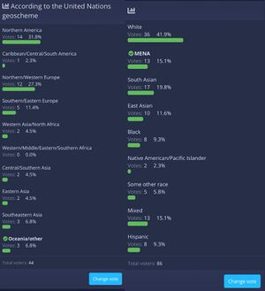
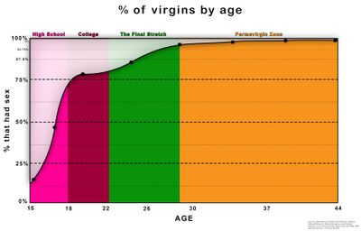
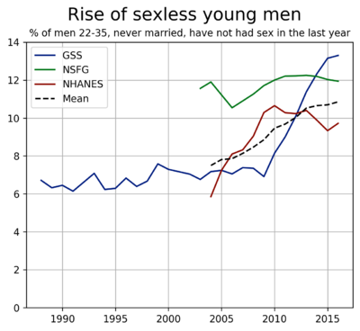
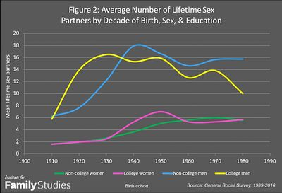
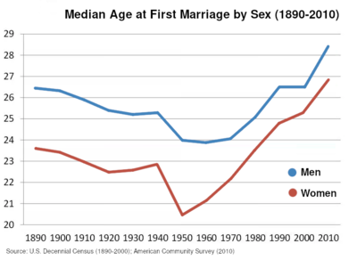
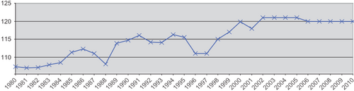
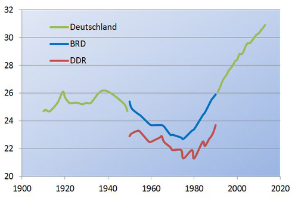

Demographics of inceldom
This article discusses the demographics of inceldom. It sheds light on the prevalence and rising trends of inceldom, and more broadly, of sexual frustration, unstable relationships and loneliness for both sexes, which is accompanied by a substantial trend towards later or no marriage, i.e. a decline in marriage traditions, as well as declining engagement in risky behavior and declining independence from the parents (see also causes of inceldom).
The data presented in this article examines both men who are likely to be incel based on their self-reported relationship status or nearcel, as well as men who are explicitly self-identified as such, and who partake in the various online incel subcultures.
The demographics of inceldom shouldn't be confused with sex ratio i.e. the distribution of sexes in different groups of populations, though the latter is likely a contributory factor to inceldom.
Status[edit | edit source]
Incels have diverse backgrounds regarding socioeconomic status and education status.[1] A survey from incels.co suggests 59% of incels are middle class, 34% lower class, and 7% upper class.[2] Further, 50% had a high school degree (or are in high school), 39% college and 11% graduate school.[2] Incels.co is, however, not necessarily representative of incels overall. Data from Germany suggest that university students are more likely to be adult virgins compared to others of similar age, while further data suggests incels have diverse socioeconomic backgrounds. Students enrolled in the more challenging studies are more affected by inceldom (see IQ and sexual success). Among U.K. university students surveyed in 2021, only a third have had an intimate relationship at university. Further, a quarter of freshmen has never kissed anyone and 43% have never had sex.[3] In high school, each extra IQ point above average increases chances of male virginity by about 3%, and 35% of MIT grad students have never had sex, compared to only 20% of average nineteen year old men.[4]
Geographics[edit | edit source]
Incels can in in principle be found in any country as evidenced by the country statistics below. China and India may have the largest shares of male incels as both of these countries have a surplus of young males. In the most popular incel communities such as incels.co, 56.1% of users were White, 8.2% were Black, 8.4 percent were "Latino", 5.4 % East Asian, 5% South Asian/"Indian", 8.2% Middle Eastern, and 8.8% 'other'.[5]
Race[edit | edit source]

Incel forums are often stereotyped as "angry White male" communities, however large polls on incels.co and Braincels showed that only around half of their userbase are/were White.[8][9] A peer-reviewed study also came to the conclusion that incel forums aren't mostly white.[10] Data from Pew Research in Table 1 suggests that Whites make up 71.1% of Reddit's U.S. userbase, but only 52.4% of Braincels' U.S. members, a difference with a 95% CI of 13-24% points (p < 0.0001). There is no evidence of Blacks being overrepresented (differences in both tables below are non-significant). Hispanics are underrepresented by 4-11% points (95% CI, p < 0.0001). The "other" races make up 8.9% of Reddit's U.S. userbase, but 33.8% on Braincels. The most overrepresented races seem to be East-Asians and South-Asians, making up around 6% of the U.S. population, but around 20% on Braincels and around 13% on incels.co. These statistics correlate with racial fertility rates being 20% higher in Hispanics (notably Mexicans make up 63% of hispanics[11]) and 8% lower in Asians when compared to Whites.[12] Caveats which may limit the accuracy of these figures include: Braincels is nearly exclusively male and may suffer other biases different from the mixed-sex Pew Research samples. Latino includes Brazil, but not Spain, and Hispanic vice-versa. Moreover, some of the underrepresentation of Whites in incel forums may have resulted from bans of White alt-rightists.
The surplus of Asian males is surprising as Asian males earn 117% of what White men earn,[13] but this finding agrees with findings among U.S. college students where "being Asian" was the best predictor of never having kissed (see Table 2),[14] and East-Asian men being less masculine, least preferred by women in online dating,[15] and East Asian women engaging the most in outmarriage possibly also because their neoteny is a super stimulus to Whites, leading to a relatively high incidence of AFWM couples.[16][17][18][19] East Asian males also have a slower life history speed (more k-selected),[20] are physically weaker/shorter,[20] hence they may lose out in dominance competitions.[21] Being more k-selected, East Asians may more often be volcels, but they also may be more sensitive to evolutionary mismatches such as the absence of arranged marriage[22] women's unusual high-status role,[23] overpopulation, or even the rise of mutations. See also behavioral sink, hikikomori, mismatchcel and ricecel.
The graphs above for the overall U.S. population also point to a high rate of male Asian incels. Blacks having more sex, but fewer relationships compared to Whites may also be explained by racial differences in life history speed, so the graphs do not necessarily contradict each other. E.g. Blacks also have much higher rates of nonmarital births.[24] As Blacks have a faster life history, implying a higher sex drive, they probably feel distressed by inceldom sooner.
| Race | U.S. adults |
Reddit, U.S, Pew Research | Reddit, /r/Braincels 2019 | |||||
|---|---|---|---|---|---|---|---|---|
| 2016, N = 288 |
2019, N = 165 |
combined N = 453 |
all, N = 1,267 |
U.S., N = 632 | ||||
| White | 65 | 70 | 73.4 | 71.2 | 54.8 | 52.4 | ||
| Black | 12 | 7 | 3.4 | 5.7 | 6.4 | 7.0 | ||
| Hispanic | 15 | 12 | 18.0 | 14.2 | 5.7 (Latino) | 7.0 (Latino) | ||
| East Asian | 8 | 11 | 5.1 | 8.9 | 7.3 | 33.2 | 10.3 | 33.8 |
| South Asian/Indian | 9.9 | 9.7 | ||||||
| Middle Eastern | 5.3 | 4.3 | ||||||
| White-Asian | 2.8 | 3.0 | ||||||
| White-Black | 2.4 | 2.7 | ||||||
| Other | 5.5 | 3.8 | ||||||
| Group | N | Never kissed (%, 95% CI) |
|---|---|---|
| African-American/Black | 161 | 11 (6.2-15.8) |
| Asian-American | 209 | 28 (21.9-34.1) |
| Hispanic/Latino | 186 | 9 (4.9-13.1) |
| European American | 330 | 7 (4.2-9.8) |
| Race | % |
|---|---|
| White | 56.1 |
| Black | 8.2 |
| Latino | 8.4 |
| Asian | 5.4 |
| Indian | 5.0 |
| Middle Eastern | 8.2 |
| Other | 8.8 |
Surveys of self-identified incels[edit | edit source]
There has been a recent (as of 2022-2023) surge in research that examines the individual and demographic traits of incels that self-identify as such, who are selected for these studies via posting links to surveys on online spaces where these self-identified incel men congregate.
Of these studies, the most important ones are listed.
Costello study[edit | edit source]
Costello (2022) found:[25]
- Incels reported substantially higher adverse mental health symptoms than the control group. Self-identified incels were much less satisfied with their lives, more depressed, more anxious, and more lonely than non-incel men. This elevated mental distress may be a cause or a result of inceldom, or both.
- Incels were slightly higher on sociosexuality than the control group of men, notably the desire facet of sociosexuality (the only one examined in this study). Higher sociosexuality means Costello's cohort of incels reported having higher libidos and more sexual fantasies than control men. Costello controlled for age (the control sample was older, as incels seem to be overwhelmingly young men). It is not surprising as prior research has found that being in a romantic relationship is associated with lower sociosexual desire among men (which may be a mere selection effect), and incels are de facto selected for higher sexual frustration. Statistical analysis revealed that incel's higher sociosexuality didn't seem to mediate their higher mental distress directly to any significant degree. This finding may support arguments that assert incels' problem 'isn't their lack of sex' per se, but rather the factors that cause this lack of sex (mental illness, low mating market value, lower SES etc).
- There was no significant difference between the groups of men in self-described political affiliation.
- Incels were more likely to be "BIPOC" (non-White) than expected by chance, according to Costello.[26] Though the demographics of the incel sample were fairly close to the demographics of the United States at White: 63.58% BIPOC: 36.42%, and Americans were a large portion of his sample, so this effect does not seem to be overly large. This figure also roughly corresponds with the surveys conducted by incel community leaders, such as the admins of incels.is and the now defunct Reddit r/braincels. It further debunks claims that self-identified incels are disproportionately White men.
- Incels scored moderately higher on the psychological instrument measuring "tendency for interpersonal victimhood" employed in the study. This means the incels surveyed had a more external locus of control (feeling of little ability to alter one's life circumstances), a lack of empathy towards other's struggles (a weak effect), "moral elitism" (a belief in the moral superiority of oneself or one's group over others, presumably incels over 'normies' in this case) and rumination (in this case nurturing negative feelings regarding slights on has experienced, which is also a symptom or cause of depression). This basically means these incels were more blackpilled than the non-incel men.
- More incels reported living with their parents compared to non-incel men, though the effect was rather small (keeping in mind most incels are young, and living with your parents to an advanced age is now normative in Western countries). Interestingly, 20 of the "incels" surveyed reported they were cohabiting with a romantic partner, so these were either fakecels or incels/trolls deliberately attempting to spoil Costello's data.
- Belief in the permanency of inceldom was weakly associated with greater depression and loneliness scores among the incel sample. This may just be a tautological finding, as depression is generally associated with a defeatist attitude and a perception of a lack of agency.[27] Greater incel forum use was weakly associated with higher levels of anxiety,
- Incels were less educated than control men. While a similar portion attained higher education at the undergraduate level, the incels were more likely to be high-school dropouts than control men and less likely to have a post-graduate university education.
- Incels were more likely to be NEETs (Not in Education Employment or Training) than non-incel men, though this effect was very small, with incels only being slightly more like to be NEET than would be expected by chance. Costello placed a high emphasis on incels' lower socioeconomic status as a cause of their inceldom, linking this finding to predominant evolutionary psychological theories of innate female economic hypergamy and desire for financial investment from their male partners.
Brandon Sparks[edit | edit source]
Sparks et al. (2023) surveyed n = 67 self-identified incels, mostly Reddit users who were recruited "through study advertisements posted on related subreddits, mostly r/Virgin and to a lesser extent r/Antifeminists" and a comparison group of n = 103 "non-incel men" (Canadian psychology undergrads). Some undergrads also declared themselves incels and were included in that sample.[28]
- Demographic data
- Over twice as many incels reported currently using a dating app compared to non-incel males (46% and 20%, respectively). Sparks et al. (2022) previously reported that a sample of self-identified incels were much less likely to have photos with friends on their dating app profiles (18% vs. 52%). In this prior study, incels were less selective in their swiping, reporting being open to broader age and geographical ranges for potential matches. Despite this, incels also reported being less likely to talk to someone on a dating app and receiving fewer matches (reported match rate of 4.1% for incels and 31% for non-incels) than the non-incel group.[29]
- Most incels and non-incels self-identified as heterosexual (92.5% and 82.5%, respectively).
- 65.7% of the control group were White, while 54.4% of incels were White (a non-significant difference, χ2 = 2.14, p = .14). However, the geographical dispersion of the incel group is unknown (closed data).
- 43% of incels had an undergrad or higher degree, compared to 31% of the control group. This difference is insignificant when you control for age, as the control group was mostly first-year university students, which is also an obvious selection bias. The appropriate comparison would be a representative sample of men from equal portions of the countries the incel participants came from, which is inconvenient to carry out. Nevertheless, compared to the general US male population of a roughly similar age bracket, this sample of incels didn't seem to have a markedly lower education level,[30] unlike what was found in Costello's sample. In fact, 22.4% of incels in this sample had a post-graduate degree, compared to 8% of US men in a similar age bracket. However, this survey's geographical heterogeneity and low sample size of incels would caution against drawing any conclusions from that information.
- There were no statistically significant differences between the groups regarding political beliefs (Mann-Whitney U test, z = 0.85621, p = 0.39).
- Mental health data (positive values are incels higher).
- Incels had a greater fear of being single (d = 1.55).
- Incels were more depressed (d = 1.02).
- Incels were more anxious (d = 0.59).
- Incels had lower self-esteem than control men (d = -1.09).
- Incels were likelier to report an avoidant attachment style (d = 0.74) and also more likely to report an anxious attachment style (d = 0.45, 95% CI 0.14-0.76), which indicate lower views of attachment objects (such as family members and potential romantic partners) in the case of the former and negative views of themselves as an attachment object in the case of the latter (likely related to a greater fear of rejection, if the effect is robust).[31] Incels were less likely to report a secure attachment style (d = -1.98).
- Dating attitudes
- Incels' self-perceived mate value was much lower than non-incels' (d = -2.19).
- Incels reported lower levels of social support (d = -1.37) and were more lonely (d = 1.47).
- Incels also had higher levels of self-critical rumination (d = 0.87).
- Incels reported being less likely to externalize blame than the non-incel men (d = -0.39, 95% CI -0.08 to -0.70) though this finding seems less robust.
- The incels reported more use of solitary coping mechanisms on the amusingly named 'cope scale', such as venting (d = 0.81, presumably primarily online) and self-blame (d = 0.71), plus behavioral disengagement (d = 1.13).
- Incels were less likely to rely on others for emotional support (d = -0.88) or to attempt to 'reframe' their negative thoughts in a more positive manner (d = -0.56).
- Incels scored higher on sexual narcissism, though the measure used was only five items long and thus probably rather unreliable (d = 0.5).
- Incels scored higher in social dominance orientation, which reflects endorsements of hierarchies (d = 0.43, 95% CI: 0.09 - 0.72), another result that is possibly not robust.
- Incels were likelier to believe women were sexually deceptive, a belief generally associated with hostile sexism[32] (d = 1.01).
- Predictive model
- A predictive model containing these various independent variables on the dependent variable of incel vs. non-incel identification found that perceived mate value and avoidant attachment predicted membership in the incel group.
Intriguingly, perceived mate value alone predicted group membership with 86% accuracy. These results contradicted the authors' prediction, as they thought loneliness and lack of social connection would strongly indicate incel group membership. This finding could suggest that individuals in the 'incel' group may not be necessarily overly pessimistic about their prospects in the mating market, contrary to a common assumption. Instead, incels' self-perceptions may mostly accurately reflect their lower mate value, although the chief underlying causes remain to be determined. This finding also may indicate the higher levels of poor mental health in the incel group are downstream of the factors that make them incel and are not predictive of their incel status, as incels themselves commonly argue. However, that hypothesis remains to be tested thoroughly. - COVID-19 Context
- The COVID-19 pandemic was ongoing during the survey, and the concomitant lockdowns and social restrictions may have given some 'non-incels' a taste of the kind of social isolation incels regularly experience.
This interpretation was suggested by the fact that rates of negative affect were higher among the non-incels than other comparative pre-COVID samples. Thus, these effects are likely understated in magnitude.
Young incels in the U.S.[edit | edit source]
Teenage sexual activity in the U.S. has declined a lot in the past decades such that the majority of high school graduates has possibly never dated by 2026 and youngcel rates have tripled since 1980.[33] This decline is accompanied by a decline in employment, driver's license ownership and alcohol consumption.[33] The downward trend was larger for Blacks than for Whites in terms of "teen pregnancies", "sexually active" and "ever had sex" (respectively -68%, -14%, -19% for Whites and -76%, -43%, -41% for Blacks), however with Blacks having substantially more sex before and after the decline.[34] The few males who do have sex bragging about it might cause the misconception among many incels that few men hoard all the women. In truth, females also have less sex. However, the decline in teen pregnancies is mostly explained by improved contraceptive use.[35]
Considering that, at the peak in 1985 only 15% did not date by 12th grade, one can assume that that at least 50% - 15% = 35% of the young would have dated if they could and hence could be considered youngcels, however likely fewer actually suffer from their inceldom as historically it was not uncommon for people to only marry and start having sex in their mid-twenties with Boomers and Gen Xers having been outliers with regards how early they married (see also this section).
Adult incels in the U.S.[edit | edit source]
Rise in male sexlessness and singledom[edit | edit source]

| Age | % female virgins | % male virgins | M:F sex ratio |
|---|---|---|---|
| 15–17 | 60.3 | 52.4 | 0.9 |
| 18–19 | 29.7 | 24.1 | 0.8 |
| 20–24 | 12.3 | 14.3 | 1.1 |
| 25–29 | 3.4 | 3.8 | 1.1 |
| 30–34 | 1.9 | 3.1 | 1.6 |
| 35–39 | 0.9 | 1.3 | 1.4 |
| 40–44 | 0.3 | 1.2 | 4.0 |

Sexless men between 18 and 30 are on the rise according to the Washington Post using data from the U.S. nationally representative General Social Survey (GSS).[36] 28% of men did not have sex in the past year, a trend that appears to have started around 2000-2005. This is accompanied by a trend towards later marriage[37][38] and rising rate of young men living with their parents.[39] Data from NHANES, NSFG and GSS together suggest around 12% of 22-35 year olds had no sex in the past year (see graph on the right).[37] This trend can be traced back to 1930-born cohorts, is not attributable to increased pornography use or working hours and is present in both the married and unmarried.[40] GSS data also shows that among today's 18 to 34 year olds, 51% have no stable partner, up from 35% in 1986.[41] Further, roughly 30% of millennials are often or always lonely and 22% have no friends which likely overlaps with inceldom because a sex partner would count as companionship or a friend. Indeed, 50% of incels.co users report having no friends.[2]
The 95% confidence interval for men who did not have sex in the past year aged 18-30 is 20%-34% (N = 137). Combining data from 2016 and 2018, one finds an estimate of 24% (N = 311, 95% CI: 19%, 29%). Most sexless males are likely incels as evidenced by:
- A study by Poortman and Liebroer that found that only roughly 4% of singles preferred their singlehood over being in a relationship.[42]
- Only 1% of the population self-identifies as asexual.[43][44]
- Sex is regarded as the most satisfying and joyous experience and ~70% of men report "sex is essential to feeling good about oneself".[45]
- Such reports are likely subject to social desirability bias, meaning men might not say they need sex to avoid violating sexual modesty norms and being perceived as shallow and sex-driven.
- About half of adult virgins in their late 20s and early 30s report they do not feel attracted to the opposite sex, which counts as volceldom, however virginity is rare at this age, agreeing with the 1% figure for asexuals mentioned above.[46]
- Only 11% of university students are volcels,[3] even though university students tend to be slow life history strategists.
- In a Greek cultural context, about half of adult singles are involuntary singles, but only 9.9-14.3% actually report being voluntary singles.[47]
- Voluntary singles could be having casual sex otherwise and men who see prostitutes have sex, but may still count as incels.
- Long-distance relationships, or celibacy motivated by religion, career or environmentalism might be reported as volceldom, but such systemic circumstances could in truth actually be involuntary.
- Career-focused singles tend to report their singledom enables their career rather than them voluntarily forgoing sex to focus on their career.[48]
Assuming some social desirability bias, there were likely around 15% to 30% millennial male incels in 2018,[49] possibly more as of 2026, though around a third of this is 18-20 year olds. With 57 million millennial males, this amounts to 8-17 million male millennial incels, and two to three times as many in an unstable or no relationship, pointing to a substantial amount of sexually frustrated males. Menelaos Apostolou estimated that given about 30% of the adult population in the U.S. is single then, about 15% of the adult population is expected to be involuntary so.[47]
More sexless men than women[edit | edit source]
| Year | Men (N, 95% CI) | Women (N, 95% CI) |
|---|---|---|
| 1990-2006 | 13.4% (2013, 11.9%, 14.9%) | 11.5% (2489, 10.3%, 12.8%) |
| 2012-2018 | 20.8% (682, 17.7%, 23.8%) | 14.5% (742, 12.0%, 17.0%) |
| z = 4.6, p < .00001 | z = 2.2, p < .03 |
In GSS data from 2018, more male than female millennials had no sex in the past year (28% vs 18%),[50] but this difference is not statistically significant. However, combining survey years 2016 and 2018, one does find a significant difference for millennials (24% vs 17%, X² = 4.6, p = 0.03). Including year 2014, it becomes more significant (21% vs 15%, X² = 6.3, p = 0.01). Ueda (2020) found similar trends in sexual inactivity comparing 2008 and 2018. Among men aged 25 to 34 it was 7.0% vs 14.1% (aOR for trend, 1.23; 95% CI, 1.07-1.42) and for women 7.0% vs 12.6% (aOR for trend, 1.17; 95% CI, 1.01-1.35).[51]
A longitudinal survey on U.S. American families conducted by the University of Michigan between 2007 and 2017 showed that only 24% of men and 22% of women had casual sex in the last month the surveys were conducted, compared to 38% and 31% when they started. The study's sample was comprised of 2,000 non-married American men and women between the ages of 18 and 23.[52]
Women are, however, known to downplay their partner counts, so sexlessness among women is possibly lower than what they report.[53] Among older adults, any difference in sexual activity vanishes and even reverses as older men remarry more often,[54] leaving behind single mothers, and causing especially high singledom among postmenopausal elderly women who also tend to outlive their husbands at very high age. The higher sexlessness among men aged 18-25 is likely mainly caused by women getting into relationships in their prime years, preferring men slightly older than themselves. Regardless of the cause, this means there are more male incels among the young bracket, especially because men's sex drive is much higher.
Sexlessness among young adults is not only higher for men, but sexlessness has also risen more for men (see table). Men experienced a greater decline (-7% vs -3%). This agrees with other findings of a rise of sexual inequality. The most sexually active men have more sex than ever,[55][56] which may indicate a slight rise in open relationships, men engaging in 'casual sex' with a quick succession of sex partners, possibly facilitated by online dating,[57] serial monogamy and other forms of de facto polygamy, accompanied by a rise in acceptance of polygamy.[58]
Much larger than the difference in reported frequency of sex is, as already mentioned, the sex difference in singledom. Data by the Pew Research Center shows women throughout their twenties and thirties consistently report lower singledom rates (e.g. 27% vs 19% in the 30-49 bracket),[59] and the same difference can be found in other countries, e.g. in Germany, even though the sex difference in sexual activity is even smaller there. This phenomenon may be explained by various factors, for example that women tend to date up in age. Women also have a stronger preference to be in a committed relationship and hence may more likely infer interest in commitment from causal relationships (which is symmetrical/dual to how men more likely infer sexual interest in any situation due to their higher sex drive[60]). This is evidenced by women having a much greater expectation that any given hookup results in heavy romantic investment on part of the man. In one study, 60% of women said they hoped a recent hookup would lead to a romantic relationship compared to only 13% of men.[61] This would suggest that there is a group of men who do not have a particularly high interest in committing at all (engaging in pumping and dumping), who some women choose to date anyhow despite desiring commitment. Another, perhaps additional explanation might be that women under-report their sexual activity and might perceive reporting their relationship status as less of a threat to their reputation than reporting their sex frequency. Pretending to be in a relationship may also be an effective strategy to avoid male coercive male behavior while still be able to engage with a suitable male when the opportunity arises without any consequences of their lying.
Conclusion[edit | edit source]
Young people generally have less sex and men even slightly less. Also, a minority has more sex at the same time, without causing an overall increase though. But the largest changes are less stable relationships and later marriage for both sexes rather than alpha males hoarding all women. Still, a small minority of young people is having plenty of sex and seems to increasingly engage in polygynous mating styles among them.[55][56] With humans being a moderately polygamous species, the tendency that men are more likely sexless can be observed across the world as summarized below and also in terms of reproductive success,[62] and is likely a result of women's higher parental investment.
Other estimates[edit | edit source]
Brian Gilmartin in the 1980s estimated that 1.5% of all American men experience involuntary celibacy, estimating them at 4.7 million people.[63] A 2012 report by The Centers for Disease Control claimed that within the past year roughly 6% of men ages 25 to 44 have not had any sexual partners. The Washington Post correlated this figure within inceldom; thus making roughly 6% of that age group virginal involuntary celibates (per Washington Post).[63] According to the Centers for Disease Control and Prevention's National Center for Health Statistics, sexlessness has increased among the young between 2002 and 2006/2008. 27% of 15-24 year old men have never had any form of sex, up from 22 percent in 2002, and 29% of females in that age bracket have never had sex, also up from 22 percent in 2002.[64][65]
Commentary[edit | edit source]
Sexual frustration is a majoritarian issue[edit | edit source]
With increasing sexlessness and steady partnerships almost cut in half for those between 18-35, one can see that inceldom issues are approaching a majoritarian issue. With 51% of young adults without a partner could indicate that the amount of people sympathetic to incels due to their own situation may now be a majority of young adults.
Sexlessness and singledom are worse for men[edit | edit source]
In addition to the (slightly) greater prevalence of male inceldom, men may face more negative consequences, e.g. because they have a higher sex drive. Also, in one study, male students who had hetronormative sex gained social status among both males and females, whereas female students lost peer popularity the more sex they had.[66][67] There is cross-cultural evidence for the "double standard" in mating, i.e. that the male virgin is a loser, whereas the female virgin is highly desirable among men and female promiscuity is shamed,[68] which may be explained by adaptations for assuring paternity. Another study has shown women find men who are in relationships more attractive than those who are not.[69] Men also slightly more often report having sex is essential to feeling good about oneself (d ≈ 0.25).[45] Among singletons, women are also more likely to report they 'prefer to remain single' than men do.[70] Further, female singles report a higher well-being compared to the married while the opposite is the case for men.[71][72]
Some feminists have claimed the comparison in acceptance to invitations to sex is not a fair measure of how much women suffer from sexlessness because women need to know the men first to be safe. However, there is evidence that women do engage in very adventurous sex with no hope for reciprocity or investment on part of the man, namely if the man has exceptionally high status[73] and/or is exceptionally good looking and even abusive/violent men (see polygamy, hybristophilia, bodyguard hypothesis, sexy sons hypothesis etc.), though such mating practices may be limited to fast-life strategists. Van Halen had sex tents set up at his performances.[74] This proves women do engage sometimes in adventurous, unsafe sex, therefore most femcels are believed to be volcels. Feminists have a point in that women have more parental investment, but the phenomena mentioned suggest some women exploit their ability to choose from many men somewhat, so their inceldom seems more self-inflicted, when it occurs. Women seem naturally oblivious to these facts.
Some findings suggest men with poor mating performance (e.g. experiencing singledom) are more prone to depressive symptoms, but other findings suggest that poor mating performance is related with equally lower well-being for both sexes (see adverse effects of inceldom). Yet, the difference in libido and coyness should imply that women, but not men, can get sex easily if they wanted. Women exhibit also a more childish neuroticism overall which is also often not taken as seriously. There is a chance that both men and women are, however, substantially selected for arranged marriage, so even though women might be able to get into a relationship easier, their behavioral dispositions might ultimately prevent them from doing so, possibly also driving them into an adverse condition when their marriage is not arranged for them and when there is no societal pressure to settle down (see evolutionary mismatch).
Women decide over celibacy rates[edit | edit source]
Several lines of research have supported the hypothesis that women, being the sexual selectors, play a decisive role in determining when sex will occur in relationships and thereby limit the overall amount of sex that occurs.
Cohen and Shotland (1996) examined the sexual behaviors of introductory psychology students. They found a correlation between when people thought sex should start in a given relationship and when they began having sex, which was non-significant for men, but very high for women (r = .88, p < .01). This data means only women decide when sex occurs, at least in the sorts of relationships examined in this portion of the study, which were exclusively "relationships with a high level of closeness and mutual physical attraction."[75] This female ability to effectively defer male sexual access may differ in short-term relationships, which may be more often defined by higher levels of male sexual coercion and a lower/non-existent emotional connection between partners.
Furthermore, in the famous Hatfield & Clark study from 1989, 75% of men accepted explicit sexual invitations from random real-life women, whereas 0% of women accepted such offers.[76] However, aggregated together with Hatfield and Clark's (1990) follow-up experiment, a total of 6.7% of women did accept an offer to visit the strange man's apartment, a strong indicator of genuine interest in a potential casual sexual encounter.
The Florida study also showed that both genders accept dates at a similar rate. The discovery that women accept dates at a similar degree when the offerer is reasonably physically attractive but outright refuse direct sexual offers suggests they use dates as a vetting mechanism. Even relatively promiscuous women (the women who accepted the offer to visit the man's apartments, presumably) appear to default to coyness in response to crude sexual passes. However, some would argue that this coy refusal takes often the form of a shit test and that a man who pushes this issue further would meet with luck in some instances.
There have been several attempts to replicate Hatfield & Clark's highly-cited findings; however, some were non-naturalistic, making their results tentative. Of the naturalistic replications, Guéguen (2011) found much higher acceptance rates for the indirect approach than Hatfield & Clark in a city on "the Atlantic coast of Britanny." He found that having the male rater be of high vs. low attractiveness had a moderate-to-large effect (d = 0.72) on whether women would accept the offer to visit his apartment alone or not. This difference was not significant for the explicit sex offer, likely owing to the low sample size.[77]
Further, Baronowski & Hecht (2015) also replicated Hatfield & Clark's findings in Germany across several conditions (campus and party setting.) They found a lower effect for sexual attractiveness on women's consent to the men's overtures and a higher effect for "perceived sexual skills." However, these two constructs were significantly overlapping and theorized to represent sub-factors of a higher-order construct.[78] They found that no women accepted a direct offer of casual sex in the campus context. Only one accepted a casual sex offer in the party environment (though possibly a fluke.) Barowski & Hecht also conducted a follow-up experiment to attempt to examine if the common counterargument to the Hatfield and Clark finding of women refusing casual sex more because they have more concern about their physical safety with strangers compared to men was valid. Subjects told they would be taking part in a dating study and then were presented with photos of people who had also seen their picture. They were then told the people in the photos either wanted a date or sex with them. The research team would then actually arrange and film their meeting, leaving them to have the date or a sexual encounter. All of the male subjects agreed to have a date or sex with at least one woman, replicating Hatfield and Clark's findings in that regard. However, it contradicted Hatfield & Clark's finding somewhat. The women in this study did not exhibit a significant difference in the number of men they chose to have a date with compared to having sex with (2.8 vs. 2.7). This finding suggests that women may be quite deceptive regarding how they accept offers for casual sex. With the right man and in the proper context (i.e., when they feel their personal safety and reputation is assured against damage), they may be much more willing to engage in illicit sexual liasons, though still to a lesser extent than men.
Thus these studies vary in conclusions. Most agree with Hatfield and Clark that men are consistently more open to casual sexual offers than women, regardless of the context in which these offers occur.[79] Ultimately, women are still the sexual selectors in all of these results. Very few men refuse random romantic overtures from women, it seems, apart from some mated men. Amusingly, in one study, these sorts of men were noted to be apologetic in their refusals to the women when they rejected them on account of already being partnered.
These findings all converge on the ultimate conclusion that men, nearly universally, have a strong drive to maximize mating opportunities whenever they can. Women, on the other hand, typically exhibit coyness in response to male approaches, seeking to defer the man's offer and receive higher investment from them in the form of a prolonged courtship, acting as a way to test his commitment to her and his general suitability as a mate. However, some women do seem reasonably open to no-strings-attached sex when their sexual pleasure is more assured (i.e., they find the man more attractive and believe he is highly sexually skilled), when the encounter is covert (protecting them from gossip), and when they believe their physical safety is more secure.
The distinguished social psychologist, Professor Roy Baumeister, sagely summarized the sex difference in mating drive: "Given the mismatch between men's and women's desires, most men are doomed to experience chronic sexual frustration. […] They are doomed to be horny."[80] Ergo, women, at least in modern society, are essentially the gatekeepers of sex[81] and hence they decide the celibacy rates.
Have women become sluttier?[edit | edit source]

Contrary to widespread impression, women do not appear to have become sluttier in terms of number of sex partners in the last two decades. There was a sharp rise in the number of sex partners and extramarital sex[82] between the 1920 and 1970-born cohorts, but it remained stable thereafter. More recently, there is rather a trend toward sexlessness in many developed countries. Non-paternity rates have decreased between 1895 and 1993, presumably due to more effective contraceptive methods.[83] Out-of-wedlock birth rates have also plateaued in the U.S., Australia and Germany in the past few decades,[84] but they are still rising is countries such as France and the Netherlands.[85]
Nonetheless, a minority of women (e.g. around 21.9% of female Tinder users) does seem to have lots of sex and can get it substantially more easily than men,[57] in fact, in a 2018 U.S. study, among a minority of people who live an active, uncommitted dating life, heterosexual men met an average of 2.4 partners for dating or sex in the past 12 months whereas that figure was 5.1 partners for women.[57] A minority of men also has plenty of sex, perhaps more than ever before.[86] So, even though people have overall less sex, a minority appears to have more. Moreover, women's rates of infidelity have increased recently, now matching men's rates in the youngest cohorts,[87] similar to the closing gap in swearing and use of foul language,[88] pointing to an overall masculinization of female behavior.
The impression of increased sluttiness may potentially becaused by the rise of self-sexualization, especially online, which appears to be driven by female intra-sexual competition in hypergamy and by economic uncertainty/inequality, i.e. women self-sexualizing themselves to get attention from economically advantaged men.[89] Girls also seem to be less well behaved,[90] and more often tattooed[91] possibly as a consequence of feminism, which may also drive the impressions of intensified sluttiness, even though sexlessness is on the rise. Such behavior may be disturbing for males due to possible adapted behavior for paternity assurance, but it also may cause a feeling of envy and missed sexual opportunities in males, especially since men experience more regret when missing out on sex (while women have more regret engaging in causal sex). This may be even harmful for females themselves as it may incite gossip and envy among them.[92][93]
In data from Finland (see the Finland section), women have become twice as likely to not have been in love with their first sex partner (from 82% down to nearly 39%) over the course of over 80 years, whereas men's answers remained unchanged around 50%.[94] This may reflect that young women more often are promiscuous like men, and just engage in sex for near-term gratification. But a number of other explanations are conceivable, e.g. that women's love may require a resource dependence. A change in promiscuous behavior, however, is also evidenced by later-born women also more readily say they'd be willing to have sex without being in love (up from 20% to around 80%), also in the Finnish data.
Are late marriage and reproduction unnatural?[edit | edit source]

Historical data on age of marriage and reproduction suggests that late first marriages and late reproduction were not unheard of in history, especially in K-selected societies such as Northwest Europe, with both sexes commonly only marrying in their mid-20s or early 30s.[95] In the 19th century U.S., even though divorces were rare and traditional gender roles were strict, around 70% of men below age 25 were unmarried.[96] Evidence from Canada, the U.S., Sweden, Denmark and Germany suggest the boomer generation (Gen X in Europe) was an outlier with particularly early marriages and reproduction.[97][98][99] In Denmark, the current mean age at first birth of 29 is comparable to the 1850s.[100] In England, the mean age at first marriage used to be considerably lower before boomers. In the 17th to 19th century, women married about five years earlier compared to today's marriages (25 v 30).[101] In the same data, delay of marriage and fertility rates roughly track economic trends. In times of economic hardship in the mid 17th century, English women married as late as 27, not far from today's figure, seemingly competing in maintaining a reputation as virgin in hopes of marrying hypergamously.
In opposition to the increasing trend in marriage age, however, the mean age of first sexual experience has receded, presumably enabled by improved contraceptive methods.[102] This leads to a paradoxical situation in which it is normal to have early sexual experience while socially approved sex within a marriage is only expected to take place extremely late (if at all). As a result, some will have sexual experience much later than others which may lead to sexual envy. Further, for K-selected races, current late marriage practices alone are not a strong evolutionary mismatch, which also suggests psychological burden of inceldom may rather lie in the fear of missing out and sexual envy provoked by a highly promiscuous minority and women dress like whores (possibly due to rising economic inequality), and potentially other evolutionary mismatches such as the lack of gender segregation, a lack of guidance and motivation toward reproduction and marriage, an emphasis on sexual promiscuity and freedom conflicting with adaptations for arranged marriage and rising sexlessness, as well as increasing policing of human sexual behavior potentially creating approach anxiety. However, for more r-selected groups living in these societies, marriage and reproduction as late does likely pose a substantial mismatch, which may explain the disproportional prevalence of non-Whites among incels. The graph on the right suggests that this evolutionary mismatch, to the extent it exists, affects women more than men.
Genetic life history speed, is not the only factor determining marriage age as marriages have been fairly early in ancient China, commonly explained by economic necessity.[103] Overall, however there is a correlation as Africa has particular early marriages (see the map on the right).
Other countries[edit | edit source]
Crossnational search term popularity[edit | edit source]
The prevalence of inceldom can possibly estimated by the popularity of the search term "incel" on Google.[104] In the time period from 5/19/20 to 5/19/21, the following popularity scores were found. Note that Google produces trend scores as a fraction of the popularity in the country where the search term is the most popular. It shows the term is the most popular in Norway, Canada, Bosnia & Herzegovina, U.S.A, Sweden and Australia.
| Country | Search term popularity |
| Norway | 100 |
| Canada | 90 |
| Finland | 89 |
| Bosnia & Herzegovina | 81 |
| United States | 69 |
| Sweden | 64 |
| Australia | 63 |
| Singapore | 60 |
| Ireland | 58 |
| New Zealand | 56 |
| United Kingdom | 56 |
| Chile | 50 |
| Brazil | 43 |
| Croatia | 43 |
| Poland | 41 |
| Italy | 40 |
| Austria | 36 |
| Philippines | 36 |
| Germany | 35 |
| Denmark | 33 |
| Lithuania | 33 |
| Portugal | 33 |
| Czechia | 29 |
| Hungary | 27 |
| Mexico | 27 |
| Netherlands | 27 |
| Serbia | 27 |
| Costa Rica | 26 |
| Kenya | 26 |
| Romania | 26 |
| Spain | 26 |
| Switzerland | 24 |
| United Arab Emirates | 21 |
| Argentina | 20 |
| Hong Kong | 20 |
| Malaysia | 20 |
| Slovakia | 20 |
| Belgium | 18 |
| South Africa | 18 |
| Turkey | 18 |
| Bangladesh | 16 |
| Colombia | 16 |
| Greece | 16 |
| France | 15 |
| Peru | 15 |
| Pakistan | 12 |
| Israel | 10 |
| Saudi Arabia | 10 |
| South Korea | 10 |
| Venezuela | 10 |
| India | 7 |
| Nigeria | 7 |
| Russia | 7 |
| Indonesia | 6 |
| Ukraine | 4 |
| Vietnam | 3 |
| Japan | 1 |
This suggests, as expected, that inceldom is particularly an issue in the most gender progressive countries. Limitations of this analysis include that popularity might not be directly proportional to the prevalence of inceldom and that popularity will be affected by proficiency of the English language. Indeed, one finds the mentioned popularity scores to correlate with English proficiency of the respective country (r = .57, p < 0.00001).[105] Accounting for this is difficult due to unreliable data on English proficiency, but the ratio of the popularity score to percentage of English speakers confirms that the term is particularly popular in the Nordic countries with Finland leading, agreeing with the figures below. Another limitation is that trends may occur with delay in different countries, typically with the U.S. leading and then their satellite states following a few years later, followed by other states. Another limitation is that countries may have existing terms for the incel phenomenon which they rather use, e.g. Hikikomori in Japan and AB in Germany. Indeed, a particularly low popularity of the term relative to the fraction of English speakers can be found in Japan and, especially in Israel, possibly also owing to a different search term being more popular. The popularity of the search term in Nordic countries may partly be explained by the disporportional amount of research occurring on the topic in these countries.[106]
Australia[edit | edit source]
In 2019 Australia's national broadcaster, the ABC, in conjunction with the University of Melbourne and the private polling company Vox Pop Labs conducted a large survey into the lifestyles, health, political beliefs, values and economic status of Australians. They found that 40% of Australians polled aged 18-24 reported 'never' having sex and 8% reported no sex in the last year, with 16% 'preferring not to say'. The corresponding figures for those aged 25-29 were 21% reporting 'never' having sex, 7% reporting having it less than once a year, with 5% of respondents refusing to answer the question.[107]
More men in the 18-29 age range reported being sexless than women in the corresponding age bracket, with this gender divide in sexlessness being most pronounced among those aged 25-29, with 28% of men that age being sexless in the last year or ever compared to 16% of women. The gender gap in sexlessness in the previous year in the 30-39 age bracket was tiny (if this gap is even statistically significant, there were also more female virgins than men in this age bracket) and women above that age were more likely to be sexless in the last year than men. This data seems to indicate that women in the 25-29 age bracket in Australia are likely disproportionately either dating older men (as these are the men that are the most sexually active) or engaging in informal polygynous relationships with males of their own age bracket, with little evidence of a severe gender skew in the sexlessness in other age brackets.
In contrast to other data from countries like the US, and despite the substantial amount of sexless young people in Australia, there is not much evidence of large secular increases in sexlessness rates among Australian youth. While the sexual frequency among married or partnered individuals did decrease,[108] the mean sexual frequency among unpartnered individuals remained stable and the self-reported age of sexual debut (among those who have sex) seemingly changed little over the decades following a sharp decrease subsequent to the sexual revolution.[108] There is also evidence that the likelihood of engaging in penetrative sex among Year 12 students (generally aged 17-18) has been increasing steadily since the early 90s, in contrast to data from the United States, however some of the increase may have been due a changing recruitment strategy.[109]
However, there is some evidence of slightly greater male sexlessness in this age bracket vis-a-vis women (the actual rate has remained fairly steady across this period), possibly indicating a small shift towards a more polygynous mating style among younger people, or perhaps it is simply evidence of increasing female promiscuity (due to the female tendency to prefer slightly older men, so college-age men in this instance, who would not be represented in this diachronic analysis) as this trend does not appear to be very pronounced.
As Australia lacks extensive, representative, annual surveys into the sexual behavior of the population, any population-level trends towards increasing sexlessness are hard to discern, though there does seem to some evidence for a recent increase in sexlessness that is particularly pronounced among men in their 20s when one compares the chronic sexlessness figures in the ABC survey and the figures reported in the second Australian Study of Health and Relationships, which reported a virginity rate of 10% men in their 20s compared to the figures from the ABC survey which found 40% of men aged 19-24 and 21% of men aged 25-29 reported they 'never' had sex.[110]
Thus, if there is a trend towards greater sexlessness among Australians, it seems this trend is isolated to those older than 18, seemingly being heavily concentrated in the 18-29 age bracket for men. The high level of sexlessness among Australia youth seems to indicate a general slowing in life history speed, with people increasingly deferring sex and reproduction beyond their 20s, leaving many men in their late teens and 20s completely sexless. In contrast, sexlessness sharply decreases in the mid-20s onwards among women, likely as they increasingly settle down into (often serially) monogamous relationships, as many men of the same age bracket are still sexless, perhaps due to female economic hypergamy related choosiness and other factors. Similar to the trends found in other developed nations, there is a reasonably large gender gap (favoring women) in terms of the proportion of the population who has attained a Bachelor's degree or above, particularly among the younger generation, which may partially explain male sexlessness in these age brackets, as women have a general sexual preference for men with an equivalent or higher level of education than themselves, at least in regards to long-term relationships.[111] However, it is important to note that rates of male social withdrawal and underemployment do not seem particularly pronounced in Australia compared to other countries.[112]
In some Australian states, the amount of young people attaining driver's licenses has seen a secular decrease,[113] mirroring trends found in other developed nations.[114] This may provide weak evidence of an overall slowing of the attainment of developmental milestones which is likely correlated with sexlessness rates and later age of first marriage.
On the city level, a survey conducted in 2016 by the lifestyle magazine Body and Soul found the highest number of adult virgins over the age of 31 (male and female combined) was in Melbourne with almost 4% of the population over 31 being virgins. In this survey, 5% of people of both sexes surveyed nationwide reported losing their virginity after the age of 25.[115] No details about the general methodology and any in-depth information pertaining to the characteristics of the respondents to this survey were provided. As the survey sample appears entirely comprised of readers of a lifestyle magazine that is included as an insert with several News Corporation newspapers (with newspaper readers trending towards being older than the median age) and is also possibly biased towards those who are sexually experienced due to the content of the survey, it is likely that those surveyed are not a representative sample of the Australian population.
China[edit | edit source]

China as well as India have some of the largest surplus of males due to son preference (sex-selective abortions and infanticide), and in China additionally due to the (now abolished) one-child policy. As a result, there are likely many male incels in these countries, and the sex ratio in both countries is even expected to even worsen in the coming decades and this development has been suggested to become a substantial threat to social stability.[116] As of 2018, there was an excess of 70 million males in China and India,[117] 24 million of these in China.[118] The Washington Post published an article with impressive visualizations of the problem.[119]
Up until the turn of the millennium, marriage was enforced quite strictly such that among 30-34 year olds only 2% of women (but 10% of men) were single.[120] However, the liberalization and Westernization following the 1990s economic boom lead to a lower marriage rate and a trend toward later mean age at first marriage just like in Western nations.[121][122] As shown in the table below, due to these formally strict norms, among older Chinese academics one observes very few 'incels' (those who are single and face difficulties attracting a partner) when compared to a matching Greece sample which has lower marriage rates. This suggests that marriage norms may decide significantly over inceldom rates during adulthood.
Despite the large surplus of single males and strong norms for women to marry early, there is a phenomenon of Chinese women remaining unmarried in their late twenties, the so called leftover women, or sheng nu.[123] In 2011, the All-China Women's Federation published a controversial (and later retracted) article titled Leftover Women Do Not Deserve Our Sympathy shortly after International Women's Day,[123] wherein it characterized these leftover women as having, what in the manosphere is called, 'hit the wall':
Pretty girls do not need a lot of education to marry into a rich and powerful family. But girls with an average or ugly appearance will find it difficult" and "These girls hope to further their education in order to increase their competitiveness. The tragedy is, they don't realise that as women age, they are worth less and less. So by the time they get their MA or PhD, they are already old — like yellowed pearls.
As many as 90% of Chinese men believe women should be married before they are 27.[123] However, this level of concern about unmarried women seems unwarranted since China has some of the highest female marriage rates worldwide, e.g. by age 35–39, the percentage of unmarried Chinese women has been reported as low as 4.6%.[124] Similar trends of liberated and autonomous women with high education and employment rates refusing to 'date down' have been observed in a variety of countries, e.g. in China, the U.S. and Japan,[125] and have been hypothesized to be evidence of an innate hypergamous mate preference, e.g. by public intellectual Jordan Peterson and others.
As can be expected from the massively male-skewed sex ratio combined with a highly materialistic culture, one observes rampant hypergamy, gold-digging and Chinese women self-advertising in social media. This has lead to a rising popularity of memes and slang in attempts of regulating what is perceived as pathological female behavior. Along with sheng nu, these memes include green-tea bitch (referring to sneaky gold-diggers who pretend to be pure and innocent),[126][127][128] sau bing (women who exploit the sexual frustration of their male coworkers),[129] the princess syndrome,[130][131] and gong nui (referring to gold-digging Hong Kong Girls in particular, though not actually part of China).[132]
| Greek sample | Chinese sample | |||||||
|---|---|---|---|---|---|---|---|---|
| Marital Status | 18–24 | 25–31 | 32–38 | 39< | 18–24 | 25–31 | 32–38 | 39< |
| Single, difficult to attract a partner | 27 | 28.5 | 25.7 | 23.5 | 26.4 | 15.6 | 3.9 | 0.8 |
| Single, between relationships | 12.4 | 18.4 | 21.6 | 17.7 | 9.8 | 8.1 | 6.8 | 4.2 |
| Single, prefer to be single | 13.8 | 10.8 | 8.1 | 7.3 | 35 | 21.5 | 3.9 | 4.2 |
| In a relationship | 45.1 | 35.4 | 21.6 | 15.8 | 28.1 | 31.6 | 1.9 | 4.2 |
| Married | 0.9 | 7 | 23 | 35.8 | 0.7 | 23.1 | 83.5 | 86.4 |
Denmark[edit | edit source]
According to Project SEXUS 2017/2018, among 25-34 year olds, 5% of men compared to 3% of women, never had sex since they were 15 (N = 3495, p = 0.0025), however for older groups there were no sex differences.[134]
Finland[edit | edit source]
In Finland, rates of sexlessness and masturbation have substantially increased in recent years, affecting especially men aged 30-40.[135] Further, the number of young men having more than two sex partners decreased for men, but remained stable for women (see the figure on the right). For more figures and discussion of the study, see the scientific blackpill[136] and this forum thread.[137]
As a very liberal country, Finland may serve as a model of liberal subcultures in other Western countries.
France[edit | edit source]
Sexlessness is on the rise in France as well. For men under thirty, a decrease in the mean sex partners was seen from 10.4 in 1992 and 7.7 in 2006 (p < 0.00001), but for women in the same age group there was no change.[138] The number of lifetime reported sexual partners for all ages was fairly stable in the recent 50 years (11.8 in 1970, 11.0 in 1992, and 11.6 in 2006). For women, mean lifetime number of partners increased from (1.8 in 1970, 3.3 in 1992, 4.4 in 2006), which may be related to women lying less about their number of partners. That women lie about this is evident as women should have just as many lifetime sex partners as men.[138]
Germany[edit | edit source]
In Germany, incels are called Absolute Beginners, or ABs, though more narrowly referring to adult virgins or those with very little relationship experience. Unlike the U.S., Germany has no regular social surveys like the GSS or NFSG with variables on sexuality. However, in 2005 and 2016, the survey service USUMA conducted large, nationally representative surveys on German's sexual behavior.[139][140] It found an overall decline in men living with a partner, and further, the share of men reporting sexual activity deceased from 81% to 73%. Within the age group 18-30 in particular, the percentage of men reporting to be sexually active within the past year fell from 92.5% to 79.7%, pointing to a very similar trend as in the U.S. (see the figure on the right). This trend was accompanied by a slight decline in interest in sex.[139] Within the same time period and the same age group, the share of sexually active German women fell from 92.6% to 82.6%.[140] A survey of 4,955 Germans conducted between October 2018 bis September 2019 suggests there are no major sex differences regarding sexual activity and sexual satisfaction. It found that about 35% among 18-25 year olds were sexually inactive in the past four weeks, compared to around 20% of 26-35 year olds. Similar to the U.S., young adult women consistently less likely report not being in a committed relationship compared to men (52.9% vs 35.9% among 18-25 year olds and 26.1% vs 17.9% among 26-35 year olds),[141] which may be explained by women mating with older men. Similarly, in data from 2008, 60.4% of men and 35.6% of women were singles among 18-30 year olds.[54] A survey showed that the rate of sexless women aged 18-91 increased from 33% to 38% between 2005 and 2016, which likely means it has increased by at least a much for males, and may veil a larger increase for the younger generations due the broad age range of the sample.[142] Within just five years, between 2015 and 2020, the share of adults who have sex at least once a month has declined from 56% to 52%.[143] Similarly to the U.S., among German adolescents and young adults there is a strong decline in drivers license ownership, alcohol consumption and pregnancies,[144][145][146] which may point to similar trends in sexlessness.
A survey from 2008 by „Neon“ estimated the number of ABs aged 20-35 to be 4% of women and 6% of men.[54] Much higher figures than this were found for student ABs in 1996. Among student groups aged 18-30, 7.5% of women but 13.7% of men never had sex. Among ages 28-30, 8.4% of men never had sex, but only 2% of women (p = 0.003).[54] Extrapolating the age range to 20-35 gives 14.2% and 7.2% respectively.[147] In 2000, sex researcher Kurt Starke found 10% of male university students under 29 were virgins ("Absolute Beginners"). Psychotherapist Poschenrieder claims to have received roughly 150 counseling requests from Absolute Beginners.[148] Some sex researchers have claimed that Absolute Beginners are not rare,[149] and sex columnist Caroline Fux said that AB's are common.[150][151]
The emergence of ABs has been blamed on various factors including a skewed sex ratio, such as a surplus of women or a surplus of men in particular regions.[152] According to Jakob Pastötter, President of the German Society for Social Science Research, the phenomenon of the Absolute Beginner is a bit more prevalent among those with demisexuality (a sexual orientation characterized by only experiencing sexual attraction after making a strong emotional connection with a specific person), i.e. people with a slow life history.[153] In 2017, sex consultant Sarah Nerb claimed 2-3% of adults in Germany are Absolute Beginners.[154]
ABs come from a wide range of professional backgrounds,[155] and they vary in their physical appearance (ABs are not only physically ugly people)[156][157] which may serve as some anecdotal evidence against the notion that inceldom is primarily caused by lookism, but these claims remain somewhat dubious as it could have been selection bias of the sort that only good looking people seek help from female sex therapists and are inclined to participate in a TV show.
In an informal survey from 2009 from various AB online forums, only ABs 27% regarded themselves as "sub-5" on the decile scale, 71% were students, 25% were female (quite differently from incel communities), and about 80% of the users were between 23 and 40 years old.[158]

India[edit | edit source]
India has a deeply held preference for sons and as a consequence of sex-selective abortion and infanticide, it has an excess of 37 million males as of 2018,[159] with these excess males making up 2.7% of the country's population. They make up an even larger fraction of around 6.5% among the young (see the figure on the right). As a result, Indian men likely suffer higher rates of inceldom than Indian women, though overall, about an equal share of men and women report having had sex over the past four weeks.[160] While women usually lose their virginity during their teens,[161] men are more likely to lose it in their twenties.[160] Statistics also show that sexlessness is higher in the south of India than the north,[160] though some regions with the highest male surplus are found in the north, e.g. accounting for around 4.7% of the population in Delhi and 4.6% in Haryana,[162] and likely an even higher share among the younger cohorts in these regions. One survey found that men in India have the least sex of all countries that were surveyed,[163] despite having a very high marriage rate.[164]
Surprisingly, according to some sources, India is characterized as having some of the lowest rape rates in international comparison,[165][166][167][168][169] however, this is suspected to owe to a very high dark figure, which is evidenced by some high profile rape cases of e.g. gang rape arousing attention in Indian media in a way unheard of in modern Western countries.[170][171] In recent years, Indian media have recognized this issue as 'rape crisis'.[172][173][174][175] There are also many reports of bluepilled female Westerners experiencing rape, groping and sexual harassment while solo-traveling in India,[176] which lead to a number of countries issuing travel warnings regarding women's safety.[177][178][179][180][181] Further, a June 2018 survey of about 550 experts on women's issues conducted by the Thomson Reuters Foundation even named India as the world's most dangerous country for women,[182][183] with Amnesty International further corroborating this assessment.[184] The Spectator Index even ranks India as the 5th most dangerous place to live in 2019.[185]
Various studies found a link between adverse sex ratio and violence against women in India, including rape,[186][187] however India's history of son preference and neglect of females in the regions with a skewed ratio may also explain some of this violence. In particular, it is believed up to 63 million females have been aborted in India's history,[188] with some regions practicing female infanticide to this day.[189] India remains the only country in the world to have pro-rape marches,[190] and nearly 40% of all females who commit suicide come from India,[191] sometimes associated with high profile rape cases.[192][193] Further, there are known elected rapists, murderers and other criminals in the Indian parliament.[194] Despite anti-child marriage legislation, a substantial share of women is still married below the age of 18,[195] with diverging estimates between UNICEF (27% in 2015-16) and the Census of India (3.7% in 2011) and there likely being substantial under-reporting due to the illegality of child marriage.[195] Further, marital rape is not criminal in India if the bride is 15 or older.[161] The pervasiveness of these norms, values and practices point to overall cultural factors underlying relatively high incidence of rape besides skewed sex ratios
The combination of strict marriage norms and female subordination may keep the incidence of male incels fairly low despite skewed sex ratio, though likely with substantial regional variation. On the other hand, the relatively low sexual activity despite high marriage rates may point to both men and women having less sex than they would prefer to have.
Israel[edit | edit source]
With 3.01 births per woman, Israel has by far the highest birth rate among the OECD countries.[196] Israel also has the highest total fertility rate among the countries with a human development index (HDI) of .8 or above, indicating a "very high" level of development, and is a practical outlier in terms of fertility among the states with the very highest levels of development (>.9).[197] This high fertility may point to a relatively low incel rate, as further evidenced by the relatively low search term popularity mentioned above. However, this high birth rate disproportionally stems from ultra-orthodox communities (Haredi, a particularly traditionalist sect that strictly follows the Jewish law, or Halakha) and other sects of religious Jews.[198][199] The birth rate in secular families, while above replacement level at 2.2 children per woman, is only about one-third of the ultra-Orthodox (6.5, as of the latest figures),[200] and not far away from other OECD countries like France (1.8) and the U.S. (1.71). This lower fertility may suggest incel-related issues may be more common among the non-Haredi, and particularly among secular Jews (43% of Jews aged over 20 in Israel as of 2020).[201] It is important to note that these religious categories are broad, with the majority of Israeli Jews being actively religious, as indicated by the high rates of literal belief in the Tanakh (Jewish Bible, 56%), adherence to the Sabbath (56-78%) and Jewish dietary laws (69%), etc. Among Jews in Israel and the United States, the level of religious adherence seems to be strongly associated with higher fertility rates.[202]
Despite having a high marriage rate among older cohorts (92% of the pop aged 40-44 report having been married),[203] surveys conducted by the CBS (Israel Central Bureau of Statistics) show that despite the relatively high birth and marriage rates, there is an increasing trend of Israeli singles, deferred marriage, and lower marriage rates, mirroring trends found in other developed countries.[204] [205] Examining the potential causes of declining marriage rates in Israel, Schellekens & Gliksberg (2018) found no evidence of this being driven by increases in female education post 1990, as has been proposed in other countries. Rather, they discovered the recent decline in marriage rates was a cohort effect (affecting only younger generations), being driven by increased rates of cohabitation as opposed to marriage and perhaps by economic pressure decreasing the odds of marriage and family formation among young men in particular.[206]
In order to infer the number of involuntary celibates in Israel's population and any shifts in this regard, is likely most informative to examine the trend of singlisation in the population. Between 1990 and 2009, the number of citizens living by themselves doubled, with slightly more men living on their own in younger age groups.[203] In Israel, about 65% of men between the ages of 25 and 29 were single in 2012, compared to 28% in 1970, while the percentage of single women between the ages of 25 and 29 has increased from 13% to 46%.[207] This singlehood gap is perhaps reflective of a weak trend of polygynous partnerships among that age cohort and women's general tendency to partner with men older than themselves.
Italy[edit | edit source]
Italy has some of the lowest marriage rates of only 3.20 marriages per 1,000 inhabitants per year, which is less than half compared to the U.S. (6.50) and the lowest marriage rate among OECD countries.[208] This likely owes to a particularly high median age in Italy, but it is also somewhat lower than Germany (4.90) which has a similarly old population. Italy also has some of the lowest fertility rates among the OECD countries with only 1.27 births per woman.[196] The Italian incelosphere is relatively prominent pointing to a relatively large share of the populating facing mating difficulties. As in other Western countries, the Italian youth has substantially been indoctrinated by feminist propaganda between 2000 and 2025, though the double standard (i.e. that men are admitted more promiscuity than men) is still fairly prevalent.[209] One informal survey suggests Italian adults have on average slightly more sex than the world's average.[210]
Japan[edit | edit source]
Japan has among the highest rates of incels and has had them for quite a while. As of 2019, 10% of 30 year olds have no sexual experience. 24.6% of 18-39 year old women have no heterosexual experience, up from 21.7% in 1992. For men it increased from 20% to 25.8%. Sex differences are remarkably small.[211] In 2016, a government survey found evidence of 541,000 hikikomori living in a country of 127 million people.[212] The survey also found a record number of “sexless” married couples.[213] The share of married individuals who have had no sex for at least a month rose from about 32% to about 47% between 2004 and 2016.[214] Most young unmarried men in Japan seem completely sexless, with 40% of Japanese men in their 20s reporting not having been on a single date in their lives, in comparison to 25% of Japanese women of the same age bracket. However, a small portion of these dateless men may have sexual experiences, as 5% of them reported being married, indicating that they met their partner through a match-making service,[215] the primary way arranged marriages are carried out in modern Japan.[216]
Unsurprisingly, and according to a Durex survey from 2009, Japan was, along with China, the least sexually satisfied nation, with just 24% being satisfied with their sex lives compared to a global average of 44.12% (±7.68).[217][218] The survey by Durex has been criticized for potentially biased sampling,[219] but a similar result was found by a Japanese sex toy company in 2019 (though with China being much more satisfied).[220]
Another study found between 1992 and 2015, the age-standardized proportion of 18-39-year-old Japanese adults who were single had increased, from 27.4 to 40.7% among women and from 40.3 to 50.8% among men.[221]
A 2025 study by Hara & Yu examines the role Japanese women's high standards play in these social phenomena, in particular, Japanese women reported being less likely to compromise on ideal preferences for male partner's levels of income, were more choosy overall, and less flexible overall in their stated ideal mate preferences.[222] Their research supported 'beauty exchange theory' or the idea that men trade access to economic resources for more physically attractive female partners, which has been contested in other, largely Western samples. More educated and higher earning men reported higher mate standards in regard to beauty and younger age. Hapanese women's mate preferences were 'unwavering', with their own income, age, location, and stated desire for marriage affecting it, though interesting more educated women did report a lower preference for male income (ibid, Table 4, pp. 16-17). This suggests that slow Japanese growth and other economic trouble has been a large factor contributing to their high incel rate and low fertility, if women's self-reported preference are seen as indicating their actual mating behavior and willingness to partner with men of different income levels. The link between male income and mate standards in this study may also indicate another potential pathway via which these economic factors become salient in this context, i.e., in cultures where male provision is highly demanded and expected, the lack of ability to align with this standard may result in demoralization and lack of pursuit of women, further exacerbating the issue and possibly playing a role in creation of the socially isolated (and mostly sexless) Japanese men like the previously-mentioned hikikomori.
Netherlands[edit | edit source]
In a survey from 2017, among 25-39 year olds, 8% (N = 427) of men but only 4% (N = 687) of women never had sex which is significantly different (Chi² = 8.053, p = 0.0045). Among 18-24 year olds, it was 25% (N = 4934) of men and 19% (N = 8216) of women, also significantly different (Chi² = 66.3, p < 0.0001).[223]
Norway[edit | edit source]
One Norwegian study showed "the proportion of childless men (at age 40 years) has increased rapidly for Norwegian male cohorts from 1940 to 1970 (from 15% to 25%). For women, it has only increased marginally (from 10% to 13%)" which points to serial monogamy. Personality traits have also become increasingly important for male fertility.[224] As in the other countries, the result points to a greater prevalence of male incels than female incels. In a survey conducted by Durex in 2006, inhabitants of the Scandinavian countries were the most likely to state they wanted more sex. 52-53% wanted more sex vs a global average 36.12±8.33.[218] However, one study concluded, "Based on the results of this and previous studies, it can be concluded that the frequency of sexual intercourse in Norway seems to have been relatively stable over the past two decades."[225]
Korea, Republic of[edit | edit source]
Nationwide survey[edit | edit source]
In 2021 the results of an online survey examining the frequency and engagement with various types of sexual behaviors on behalf of South Korean men and women was published in the World Journal of Men's Health (Ahn et al., 2021). The data used in the consequent study was derived from a representative sample of Korean men and women aged between 18 and sixty-nine.[226]
The key findings in regards to the prevalence of the incel problem in the country are:
- More men than women reported sexual experience in all age brackets but the youngest (aged 18-19). However, as the sample size for the youngest age bracket was small, it is unknown if this difference is statistically significant. Among men in their 20s, around 25% were virgins (compared to around 35% of women in this age bracket). Virginity rates steadily decreased with age among men, with around 4% of men in their 30s still reporting a lack of sexual experience, compared to around 13% of women in their 30s.
- Among men of low education levels (high school education or less) or in the lowest income bracket (900 USD or less a month), the aforementioned sex difference in sexual experience was reversed, with more women in these education and income brackets reporting prior sexual experience.
- In terms of the reported engagement in sexual activity in the last year (among those with sexual experience), women in the age bracket of 18-39 were more likely to report having had a sexual partner in the previous year than men in these age brackets. It is unclear if the sex difference found here is significant for the 18-19 age bracket as the sample size is too low to detect a significant effect. Still, such a sex gap would be concordant with the sex differences found for the younger age brackets if it would prove to be evident with a larger sample size.
- The biggest sex gap found (in terms of being currently sexually active) was in the 20-29 age bracket, with 58.8% of these men reporting sexual activity in the last 12 months compared to 78.6% of the women of this age.
- Women of all age brackets reported substantially less engagement in casual sexual activities than men. This sex discrepancy in reporting engagement in promiscuous sexual activity is likely due to a mix of factors.
Firstly, in a society with highly conservative attitudes to extra-martial sexual behaviors engaged in by women, such as South Korea, women are very likely to downplay their engagement in casual sexual activity, even in anonymous surveys.
Secondly, many men may be leading women on by promising investment while they, but not the women in question, consider the relationship to be casual in nature ('friends with benefits').
Thirdly, although prostitution is illegal in South Korea, the country apparently has a large sex trade, with 20 percent of men aged between 20-64 reportedly visiting prostitutes up to 4.5 times a month on average.[227] It is estimated that sex work contributes a greater portion of the GDP in South Korea than the agricultural sector (ibid). In light of the above information, it is likely that a lot of the casual sexual encounters reported by men in this survey were with prostitutes.
The above data indicate that involuntary celibacy is mainly a problem found among younger men in South Korea, likely due to increases in the age of first marriage and widespread social disengagement driven by mental health issues, impoverishment, and a highly competitive society and economic system. South Korea's very competitive school system and society likely plays a substantial role in driven these phenomena, with men who cannot compete in such a large scale, advanced, and hyper demanding economy dropping out at an early age. In support of this, South Korea's strict education system does seem to play a large role in that countries high suicide rate.[228] The fact that involuntary celibacy (among males) is concentrated in younger men may also be attributable to the fact that the sex gap in educational level has been rapidly shrinking or even reversing in South Korea, like in most other advanced economies.[229]
Several convergent threads of evidence in this study do indicate that female economic and status hypergamy or at least homogamy is a strong driver of involuntary celibacy in the ROK (together with a high age at first marriage), even compared with the situation in the other countries listed in this article. As women seem to have a strong sexual preference for higher-status and financially provident men (especially when it comes to long-term relationships, and it does seem from this study that many women are still waiting for marriage to engage in sex in the ROK), a substantial portion of Korean men are likely falling below the minimum threshold of either that women generally require in their male partners for either trait, especially vis-à-vis women's increasing status in these realms. This and the fact that men greatly sexually prefer younger women likely play a role in driving male involuntary celibacy in the ROK. A large part of the sex gap in sex rates by age is likely explicable by Korean women marrying older men. Thus the competition among men for young fertile women in this country is most likely extremely intense, leaving young men who are uncompetitive in the dating market without a female partner.
Seoul[edit | edit source]
A 2021 survey commissioned by academics at Yonsei University found that 36% of Seoulites reported being sexless in the year prior to the survey.[230] 43% of female respondents reported not having sex and 29% of male respondents reported being sexless. There was a pronounced sex difference with how celibacy rates were distributed across age groups, with 42% males aged between 19-29 reporting being sexless (the highest among men), which was even higher than the number of men aged 60+ who were sexless. Among women, this sexuality-age relationship was reversed, with women over 60 years old being the most likely to report being sexless in the last year.
The reasons respondents identified that contributed to their being sexless also differed substantially by sex, with men more likely to report 'not being able to find a partner' as a reason compared to women reporting a lack of interest in sex as being a major reason for their celibacy. This trend was particularly pronounced among the youngest cohort of men, with 24% of men professing that difficulties with obtaining a sexual partner contributed to their sexlessness.
Self-perceived social class also contributed to sexlessness rates, with people who considered themselves middle-class or above being more sexually active than people that considered themselves working class. This relationship is held across both sexes and is proportionally similar for women and women (though men in general reported being more sexually active), though interactions between social class and age didn't seem to be examined.
The findings of this survey suggest similar conclusions to Ahn et al., 2021's nationwide study, mentioned above, suggest most sexual activity still mainly takes part in the context of long-term sexual relationships, generally marriage in South Korea and that economic factors play an important role in determining men's sexual access in that country. Unlike Ahn et al., this survey did not find evidence for lower sexlessness rates among young Seoulite women (aged 19-29) than men of the same age. The sex gap in celibacy rates among old people can likely be partially explained by the ROK's prominent prostitution industry and the tendency of men to date/marry women younger than then, though the median age gap in terms of first marriage in South Korea is small and comparable to most Western countries.[231] Some of this effect may also be driven by the increasing tendency for South Korea men to import foreign bridges, chiefly from poorer Asian countries such as China, The Philippines, and Vietnam, with the husband-wife age gap in such relationships being larger on average.[232]
Foreign brides[edit | edit source]
It can be averred that the Korean men who import foreign brides are generally men that are more likely to be sexless otherwise, as they are more often older men with a lower level of educational attainment. South Korea is one of the most educated countries in the world and it has mirrored the general trend in developed countries for women to become more educated than men over time, judging by enrollment rates in higher educated broken down by sex.[233]
Indeed, Raymo & Park (2020) found that declines in marriage rates for lower-educated men were more driven by changes in marital market composition (more educated women) compared to more highly educated men, and that the increasing tendency for men of low SES (as judged by education) to seek marriage with foreign women helped to flatten the decline in marriage that would've occurred in that cohort based on their projections. The increasing trend to import foreign brides made little difference to marriage trends for highly educated men.[234] As noted above, Korean men also import wives from countries that are comparatively poorer than South Korea at a higher rate, while women (who marry those of foreign citizenship less) are more likely to marry men from countries such as the United States (it is claimed that these are mostly ethnic Koreans).[235]
This marriage pattern is congruent with a general trend of citizenship hypergamy in international marriages where women from poorer countries tend to marry men from wealthier countries.[236] The number of South Korean men married to foreign women has more than doubled from 2007-2019,[237] and some local governments in South Korea grant subsidies to men who seek foreign brides in an effort to ameliorate South Korea's low fertility rate crisis.[238] This increase in Korean men married to foreign women has occurred despite increased regulation of the foreign marriage broker industry, partly in response to concerns surrounding human trafficking and the widespread abuse of foreign-born wives by the Korean men who are married to them,[239] though some have criticized the lax nature of these regulations and claimed that the drive to increase the low birthrates in Korea continues to be a prevailing concern for South Korean policymakers in this area.[240] In terms of proportionate amounts, the amount of new marriages involving Korean men married to foreign born brides has been stagnant since the late 2000s.
Low fertility[edit | edit source]
South Korea has the lowest fertility rate in the world, with a TFR (total fertility rate) of 0.81 in 2021, compared to the general population replacement rate of 2.1 (replacing the parents plus a country specific adjustment for child mortality rates). The rate has fluctuated around that level for the past few years, likely plunging to the nadir of the current lowest-ever rate in response to the Covid-19 pandemic.[241] A high cost of living, a strenuous and extremely competitive education system, declines in social solidarity, increases in female education, increasing pessimism, the rise of the 'gig economy', dysgenics, female hypergamy,[242] and a growing militant feminist reaction against Korea's generally patriarchal Confucian marriage culture[243][244] have all been proposed as potential explanations for this decline in fertility.
Like in other developed economies, declines in fertility in South Korea have been associated with a greater age at reproduction, longer spaces between generations, and smaller family sizes. There has also been a general shift where Korean women, who, even after the demographic transition shifted Korea to sub-replacement fertility, previously had very high rates of childbirth across their lifetimes combined with smaller families centered around two children, are increasingly childless for life.[245]
The South Korean government, treating the low fertility rate as a crisis that threatens to weaken the economy via the tax burden of an aging population and labor shortages, has attempted to increase marriage rates and therefore birthrates via various incentives. The most ambitious of these was a program launched in 2006 which aimed to boost the TFR to 1.6 by 2020, which has been an abject failure.[246] Other initiatives were launched in 2010 and 2016, respectively. Such initiatives were focused primarily on financially incentivizing reproduction. This has been proposed to be an overly narrow approach which ignores important sociological factors, hence the failure of these policies. Park (2020) argues that policies that focus on providing cost of living support, promoting work-life balance and measures to encourage social cohesion and integration, as has been attempted to varying degrees of success across Japan, would be more adequate in helping to alleviate the increasing social burden of South Korea's period of 'lowest low' fertility.[247]
Switzerland[edit | edit source]
In a 2017 survey of 26 year olds, 5.3% were still virgins. Men were slightly overrepresented among these adult virgins, with 58% of them being male.[248]
Turkey[edit | edit source]
Data on the prevalence of involuntary celibacy in Turkey is hard to come by, with there being no national representative surveys that examine sexual issues. Much research into proxy measures, such as sexual frequency, level of sexual experience, etc., is generally restricted to samples drawn from Turkey's Mediterranean and Asia Minor regions. These regions are less socially conservative in comparison to the Anatolian Islamic heartland of that nation. Nevertheless, we can extract from these surveys some very rough measures of the level of involuntary celibacy in certain regions and specific demographic cohorts in this country. A brief list of some of the key findings of these surveys as they pertain to involuntary celibacy follows:
- A questionnaire administered to university students aged 20-25 in the coastal town of Izmir, located in the Asia Minor region of Turkey on the Aegean sea, found that 61.2% of males had reported engaging in any kind of sexual intercourse (vaginal, anal, or oral) compared to 18.3% of females (Aras et al. 2007).[249]
These figures were comparable to earlier findings, with the pooled average rate of sexual engagement in prior surveys conducted on Turkish university students (range 33%-68% for males and 4.2% to 45% for females). Regarding the level of sexual engagement, the highest figures were found in a sample of students from Istanbul University for both sexes (though the male sample was also mixed with students from Western Anatolia).[250]
However, most of the men in this particular sample had reported using prostitutes. In contrast, only 28% of sexually active males in Aras et al.'s sample stated their first sexual partner was a sex worker. - A more recent sexual survey on Turkish university students (mean age 20.79 ± 1.9) conducted in 2020 by Nazik et al. on students from "a university in the Mediterranian region of Turkey" found a roughly equal level of engagement in romantic relationships among the sexes, with 51% of the women reporting having previous "had a partner" as compared to 55% of the men.[251]
However, it was noted that actual engagement in the various kinds of sexual activity reported was higher among the females in the sample. This higher engagement in sexual activity among the women was chiefly limited to oral and anal sex.
This finding provides some credence to the idea of women in conservative Islamic countries frequently engaging in non-vaginal sexual intercourse in the belief that this will prevent their future husband from knowing of their pre-marital sexual behavior. It is important to note that total levels of engagement in sexual intercourse were low for both sexes, though, compared to university samples from other countries.
The findings of these studies suggest Turkey is still a country where pre-marital sex is relatively rare and frowned upon, especially among women. However, the result of the more recent survey suggests female promiscuity may be on the rise in Turkey (at least among urban elites and the middle class). These findings also indicate that the demographic transition is well underway in Turkey, with the fertility ratio in Turkey steadily declining (though still around replacement level),[252] age of first marriage increasing,[253] and with a higher and still growing level of education and engagement in the workforce among women,[254] together with decreases in the gross marriage rate. These data points suggest very high incel rates among Turkish men in their 20s, with the mean age of first marriage in Turkey for men being 27.9 for men and 25 for women as of 2019.[255] What pre-marital sexual relationships that do exist generally seem surreptitious in nature (particularly among women) or the result of engagement with sex workers among males, apart from those that take place in particularly socially liberal circles, perhaps.
The gross marriage rate in Turkey seems quite high compared to other OECD countries, roughly as high as the United States with a crude marriage rate of 7 per 1,000 as of 2019,[256] a rate that has subsequently declined in light of the COVID-19 pandemic.[257] The crude marriage rate in Turkey seems to be on a downward trend in general, according to figures compiled by the Turkish Statistics Institute (TÜİK), perhaps pointing to an increase in subsequent involuntary celibacy in the nation.[258]
Owing to Turkey's high social conservatism (at least compared to Western countries) the ability to achieve marriage is likely a major factor in determining involuntarily celibacy in the country. Thus, it is important to note that arranged and even forced marriages are still quite common in Turkey, especially in more rural areas and the highly socially conservative eastern regions of Anatolia,[259] with a report published by TÜİK finding these types of marriage were more common than free choice marriages, at least among women who married young (≤ 24).[260] This would indicate that the causes of male involuntary celibacy would be expected to be somewhat different in Turkey compared to the more sexually permissive Western countries, as somewhat different factors determine mate choice in the context of arranged marriage compared to "love marriages."[261] Thus, it is not easy to work out precise figures on the number of sexless individuals in Turkey, apart from sexlessness likely being heavily concentrated among younger Turkish men, similar to trends found in the other countries discussed in this article.
United Kingdom[edit | edit source]
The rate of U.K. incels has likely also risen considerably. Among 26-year-old millennials (born 1989-1990), i.e. in 2016, 12.5% had no sexual experience, but in previous generations it was only 5% at the same age.[262] England and Wales moreover have some of the highest mean age at first marriage.[263][264] The Natsal survey (National Survey of Sexual Attitudes and Lifestyles) revealed that British people are having sex less often than they did 20 years ago. Couples aged 16 to 64 had sex five times per month in 1990, in 2000 it was only four times and three times in 2010.[265] In a survey by YouGov from 2019, around 18% of men said they had no close friends. Only 12% of women said the same.[266][267] Further, 88% of Britons aged from 18 to 24 said they experience loneliness to some degree, 24% often and 7% saying they are lonely all of the time.[268]
See also[edit | edit source]
References[edit | edit source]
- ↑ Haydon, A. A., Cheng, M. M., Herring, A. H., McRee, A.-L., & Halpern, C. T. (2013). Prevalence and Predictors of Sexual Inexperience in Adulthood. Archives of Sexual Behavior, 43(2), 221–230. doi:10.1007/s10508-013-0164-3
- ↑ 2.0 2.1 2.2 October 2019 Incels.co Survey
- ↑ 3.0 3.1 https://www.telegraph.co.uk/family/parenting/university-students-arent-having-sex-parents-dont-know-whether/ [Archive.is]
- ↑ https://slatestarcodex.com/2014/08/31/radicalizing-the-romanceless/
- ↑ https://incels.wiki/w/Scientific_Blackpill#Incel_forums_are_disproportionately_populated_by_suicidal.2C_disabled.2C_autistic.2C_and_ethnic_men
- ↑ https://web.archive.org/web/20230818225255/https://incels.is/threads/what-race-are-you.513925/
- ↑ https://web.archive.org/web/20230818225348/https://incels.is/threads/which-region-of-the-world-are-you-in.513916/
- ↑ https://incels.wiki/w/Scientific_Blackpill#Incel_forums_are_disproportionately_populated_by_suicidal.2C_disabled.2C_autistic.2C_and_ethnic_men
- ↑ https://www.pressreader.com/uk/the-daily-telegraph-telegraph-magazine/20180818/282213716666395
- ↑ http://www.organisms.be/downloads/incels.pdf
- ↑ https://www.pewresearch.org/fact-tank/2017/09/18/how-the-u-s-hispanic-population-is-changing/
- ↑ https://www.statista.com/statistics/226292/us-fertility-rates-by-race-and-ethnicity/
- ↑ https://journals.sagepub.com/doi/full/10.1177/1536504218812869
- ↑ 14.0 14.1 https://incels.wiki/w/Scientific_Blackpill#Being_an_Asian_male_in_the_USA_is_a_primary_predictor_of_.27never_being_kissed.27
- ↑ https://incels.wiki/w/Scientific_Blackpill#Black_men_and_women_appear_.27more_masculine.27_than_whites.3B_Asian_men_appear_.27less_masculine.27
- ↑ https://incels.wiki/w/Scientific_Blackpill#Asian_women_marry_interracially_more_than_twice_as_often_as_Asian_men
- ↑ https://incels.wiki/w/Scientific_Blackpill#An_Asian_face_is_more_.27similar_to_that_of_an_infant.27_than_other_races
- ↑ https://incels.wiki/w/Scientific_Blackpill#It_is_normal_for_healthy_men_to_find_pubescent_.26_prepubescent_females_sexually_arousing
- ↑ https://www.youtube.com/watch?v=L343dzWizmk
- ↑ 20.0 20.1 http://philipperushton.net/wp-content/uploads/2017/02/Race-Evolution-and-Behavior-ocr.pdf
- ↑ https://incels.wiki/w/Scientific_Blackpill#Among_male_university_students.2C_only_cues_of_physical_dominance_over_other_men_predicted_their_mating_success
- ↑ https://journals.sagepub.com/doi/full/10.1177/1474704919887706
- ↑ https://incels.wiki/w/Scientific_Blackpill_(Supplemental)#Women_were_historically_predominantly_involved_in_cooking_and_they_never_dominated_men
- ↑ https://commons.wikimedia.org/wiki/File:Nonmarital_Birth_Rates_in_the_United_States,_1940-2014.png
- ↑ https://link.springer.com/article/10.1007/s40806-022-00336-x
- ↑ https://www.psypost.org/2022/09/incels-exhibit-reduced-psychological-well-being-and-a-greater-tendency-for-interpersonal-victimhood-study-finds-63979
- ↑ https://pubmed.ncbi.nlm.nih.gov/21502670/
- ↑ https://link.springer.com/article/10.1007/s12144-023-04275-z
- ↑ https://www.researchgate.net/publication/361189211_An_Exploratory_Study_of_Incels'_Dating_App_Experiences_Mental_Health_and_Relational_Well-_Being
- ↑ https://nces.ed.gov/programs/coe/pdf/coe_caa.pdf
- ↑ https://www.researchgate.net/publication/223185973_Development_and_validation_of_a_State_Adult_Attachment_Measure_SAAM
- ↑ https://pages.nyu.edu/jackson/sex.and.gender/Readings/AmbivalentSexism-Sage17.pdf p. 895
- ↑ 33.0 33.1 https://incels.wiki/w/Scientific_Blackpill#The_percent_of_high_school_students_who_date_is_plummeting
- ↑ https://www.childtrends.org/indicators/sexual-activity-among-teens
- ↑ https://www.guttmacher.org/news-release/2016/declines-teen-pregnancy-risk-entirely-driven-improved-contraceptive-use
- ↑ https://www.washingtonpost.com/business/2019/03/29/share-americans-not-having-sex-has-reached-record-high/
- ↑ 37.0 37.1 https://ifstudies.org/blog/male-sexlessness-is-rising-but-not-for-the-reasons-incels-claim
- ↑ https://www.jsmp.dk/posts/2019-04-31-sexlessness/
- ↑ https://www.pewsocialtrends.org/2016/05/24/for-first-time-in-modern-era-living-with-parents-edges-out-other-living-arrangements-for-18-to-34-year-olds/
- ↑ http://link-springer-com-443.webvpn.fjmu.edu.cn/content/pdf/10.1007%2Fs10508-017-0953-1.pdf
- ↑ https://www.washingtonpost.com/lifestyle/2019/03/21/its-not-just-you-new-data-shows-more-than-half-young-people-america-dont-have-romantic-partner
- ↑ https://doi.org/10.1016/j.ssresearch.2010.03.012
- ↑ https://health.usnews.com/health-news/health-wellness/articles/2015/05/04/asexuality-the-invisible-orientation
- ↑ https://scholar.google.com/scholar?cluster=17133744500922136515&hl=en&as_sdt=0,5
- ↑ 45.0 45.1 https://incels.wiki/w/Scientific_Blackpill#Sex_is_the_most_pleasurable.2C_joyous.2C_and_meaningful_human_experience
- ↑ Haydon, A. A., Cheng, M. M., Herring, A. H., McRee, A.-L., & Halpern, C. T. (2013). Prevalence and Predictors of Sexual Inexperience in Adulthood. Archives of Sexual Behavior, 43(2), 221–230. doi:10.1007/s10508-013-0164-3
- ↑ 47.0 47.1 https://www.researchgate.net/publication/327420742_Are_People_Single_by_Choice_Involuntary_Singlehood_in_an_Evolutionary_Perspective
- ↑ https://www.springer.com/de/book/9783658059231
- ↑ This figure was computed by arbitrarily subtracting a volcel rate among the sexless of ~25% for the lower bound and ~15% for the upper bound of the 2018 confidence interval and then rounding to the next multiple of 5 to get nice figures.
- ↑ https://newsinfo.inquirer.net/1101592/the-great-sex-recession-celibate-americans-at-record-high
- ↑ https://jamanetwork.com/journals/jamanetworkopen/article-abstract/2767066
- ↑ https://doi.org/10.1177/2378023121996854
- ↑ https://incels.wiki/w/Scientific_Blackpill#Women.27s_reported_sex_partner_count_dramatically_increases_when_hooked_up_to_a_polygraph
- ↑ 54.0 54.1 54.2 54.3 https://www.springer.com/de/book/9783658059231
- ↑ 55.0 55.1 https://incels.wiki/w/Scientific_Blackpill#The_top_5-20.25_of_men_.28ie._.22Chads.22.29_are_now_having_more_sex_than_ever_before
- ↑ 56.0 56.1 https://incels.wiki/w/Scientific_Blackpill#Women_get_2-3_times_as_many_casual_sexual_relationships_from_Tinder_than_men
- ↑ 57.0 57.1 57.2 https://incels.wiki/w/Scientific_Blackpill#Women_get_2-3_times_as_many_casual_sexual_relationships_from_Tinder_than_men
- ↑ https://news.gallup.com/opinion/polling-matters/214601/moral-acceptance-polygamy-record-high-why.aspx
- ↑ https://www.pewresearch.org/social-trends/2020/08/20/a-profile-of-single-americans/
- ↑ http://faculty.missouri.edu/segerti/capstone/BussSexualInterest.pdf (Buss 2012)
- ↑ http://doi.org/10.1111/pere.12220 (Weitbrecht 2017)
- ↑ Brown, G.R., Laland, K.N. and Mulder, M.B. 2009. Bateman's principles and human sex roles. [FullText]
- ↑ 63.0 63.1 https://www.stuff.co.nz/technology/72931916/One-of-the-internets-most-reviled-subcultures
- ↑ https://www.livescience.com/13072-sex-stats-virgins-rise.html
- ↑ https://time.com/4435058/millennials-virgins-sex/
- ↑ https://incels.wiki/w/Scientific_Blackpill#Males_gained_peer_status_through_having_had_sex_and_females_lost_peer_status
- ↑ Boislard, M.-A., van de Bongardt, D., & Blais, M. (2016). Sexuality (and Lack Thereof) in Adolescence and Early Adulthood: A Review of the Literature. Behavioral Sciences, 6(1), 8. doi:10.3390/bs6010008
- ↑ https://digitalcommons.humboldt.edu/cgi/viewcontent.cgi?article=1008&context=senior_comm
- ↑ https://incels.wiki/w/Scientific_Blackpill#Women_are_more_attracted_to_men_who_are_already_in_relationships_than_single_men
- ↑ https://www.researchgate.net/publication/349428337_Involuntary_singlehood_and_its_causes_The_effects_of_flirting_capacity_mating_effort_choosiness_and_capacity_to_perceive_signals_of_interest
- ↑ https://yaleglobal.yale.edu/content/should-women-stay-single
- ↑ https://www.health.harvard.edu/mens-health/marriage-and-mens-health
- ↑ https://doi.org/10.1017/S0140525X00029939
- ↑ https://www.cracked.com/article_22900_van-halens-sex-hut-8-acts-legendary-rockstar-debauchery.html
- ↑ https://doi.org/10.1080/00224499609551846
- ↑ https://www.sciencefriday.com/wp-content/uploads/2016/04/gender-differences-in-receptivity-to-sexual-offers.pdf.
- ↑ https://pubmed.ncbi.nlm.nih.gov/21369773/
- ↑ https://pubmed.ncbi.nlm.nih.gov/25828991/
- ↑ https://interpersona.psychopen.eu/article/view/121/html
- ↑ Baumeister & Tice, 2001
- ↑ https://assets.csom.umn.edu/assets/71503.pdf
- ↑ https://upload.wikimedia.org/wikipedia/commons/3/36/Nonmarital_Birth_Rates_in_the_United_States%2C_1940-2014.png
- ↑ https://journals.sagepub.com/doi/abs/10.2466/pr0.103.3.799-811
- ↑ https://en.wikipedia.org/wiki/File:Nonmarital_Birth_Rates_in_the_United_States,_1940-2014.png
- ↑ https://ourworldindata.org/grapher/share-of-births-outside-marriage?country=AUS~CAN~CRI~DNK~DEU~ITA~NLD~SVK~CHL~FRA~GRC~JPN~MEX~USA
- ↑ https://incels.wiki/w/Scientific_Blackpill#The_top_5-20.25_of_men_.28ie._.22Chads.22.29_are_now_having_more_sex_than_ever_before
- ↑ https://incels.wiki/w/Scientific_Blackpill#Half_of_women_in_relationships_report_maintaining_a_.27back-up.27_partner_in_their_social_circle
- ↑ https://www.cambridge.org/elt/blog/2016/11/15/women-now-use-the-f-word-as-much-as-men/
- ↑ Blake KR, Bastian B, Denson TF, Grosjean P and Brooks RC. 2018. Income inequality not gender inequality positively covaries with female sexualization on social media. [Abstract]
- ↑ Dytham S. 2018. The role of popular girls in bullying and intimidating boys and other popular girls in secondary school. [Abstract]
- ↑ https://www.reuters.com/article/us-tattoos-women/tattooed-women-outnumber-men-in-a-new-poll-idUSTRE8241SF20120305
- ↑ https://incels.wiki/w/Scientific_Blackpill#Women_write_45.0-61.3.25_of_all_.27misogynistic.27_tweets_on_Twitter_about_female_promiscuity
- ↑ http://personal.tcu.edu/sehill/EnvyPAID2012.pdf
- ↑ https://www.youtube.com/watch?v=qeYts4AzRUo
- ↑ Patricia Crone (2015). Pre-Industrial Societies: Anatomy of the Pre-Modern World. Oneworld (Kindle Edition). p. 2747 (Kindle loc.).
- ↑ https://www.ncbi.nlm.nih.gov/pmc/articles/PMC3002115/
- ↑ https://commons.wikimedia.org/wiki/File:2017_Sweden_mean_age_at_marriage_1871-2016-sv.png
- ↑ https://www150.statcan.gc.ca/n1/pub/11-630-x/11-630-x2014002-eng.htm
- ↑ https://commons.wikimedia.org/wiki/File:Heiratsalter_lediger_Frauen_in_Deutschland_1910-2013.png
- ↑ https://www.ejog.org/article/S0301-2115(19)30407-5/fulltext
- ↑ https://journals.openedition.org/chs/737#bodyftn16
- ↑ https://www.researchgate.net/figure/Median-age-at-first-marriage-and-first-intercourse-1950-2000-United-States_fig1_225497779
- ↑ https://pubmed.ncbi.nlm.nih.gov/12285484/
- ↑ https://trends.google.com/trends/explore?q=incel
- ↑ https://en.wikipedia.org/wiki/List_of_countries_by_English-speaking_population
- ↑ https://scholar.google.com/scholar?scisbd=2&q=incels.wiki&hl=en&as_sdt=0,5
- ↑ https://www.abc.net.au/news/2020-12-10/australia-talks-data-explorer/12946988#/responses/in-general-how-often-would-you-say-you-have-sex [Archive.is]
- ↑ 108.0 108.1 https://www.publish.csiro.au/sh/SH14113
- ↑ http://teenhealth.org.au/resources/Reports/Secondary%20Student%20Survey%20Report%20-%20Trends%20Over%20Time.pdf
- ↑ https://www.ashr.edu.au/wp-content/uploads/2015/06/sex_in_australia_2_summary_data.pdf
- ↑ https://incels.wiki/w/Scientific_Blackpill#Women_prefer_men_with_high_income_and_high_educational_status
- ↑ https://www.abs.gov.au/statistics/people/education/education-and-work-australia/latest-release
- ↑ https://chartingtransport.com/2015/03/09/trends-in-drivers-license-ownership-in-australia/
- ↑ https://web.archive.org/web/20150310235505/http://www.eng.monash.edu.au/news/shownews.php?nid=2&year=2015
- ↑ https://www.dailytelegraph.com.au/lifestyle/health/body-soul-daily/sex-lives-of-australians-revealed-in-national-bodysoul-survey/news-story/1295bc6b2f76cbc9d4200e97d2ebc756
- ↑ https://www.scmp.com/magazines/post-magazine/long-reads/article/2142658/too-many-men-china-and-india-battle-consequences
- ↑ https://incels.wiki/w/Scientific_Blackpill#There_are_now_70_million_excess_men_in_China_and_India_who_will_live_and_die_without_partners
- ↑ http://pulitzercenter.org/projects/china-population-women-bachelor-marriage
- ↑ https://www.washingtonpost.com/graphics/2018/world/too-many-men/
Archived: https://archive.is/4R90y - ↑ Ji, Y. (2015). Between tradition and modernity: "leftover" women in shanghai. Journal of Marriage and Family, 77(5), 1057-1073.
- ↑ https://news.cgtn.com/news/3d3d774e3467444f32457a6333566d54/index.html
- ↑ http://www.businessweek.com/articles/2012-08-22/chinas-leftover-ladies-are-anything-but
- ↑ 123.0 123.1 123.2 https://www.bbc.co.uk/news/magazine-21320560
- ↑ https://web.archive.org/web/20140416220058/http://usa.chinadaily.com.cn/epaper/2014-02/12/content_17279212.htm
- ↑ https://www.theatlantic.com/international/archive/2011/10/for-chinas-educated-single-ladies-finding-love-is-often-a-struggle/246892/
- ↑ https://www.theloophk.com/canto-slang-green-tea-bitch/
- ↑ https://www.urbandictionary.com/define.php?term=green%20tea%20bitch
- ↑ https://www.whatsonweibo.com/dangerous-women-the-green-tea-bitch/
- ↑ https://www.theloophk.com/canto-slang-101-sau-bing/
- ↑ https://zula.sg/princess-syndrome/
- ↑ https://myhongkonghusband.com/2016/01/11/%E5%85%AC%E4%B8%BB%E7%97%85%E5%BE%B5-princess-syndrome-characteristic/
- ↑ https://en.wikipedia.org/wiki/Gong_nui
- ↑ https://journals.sagepub.com/doi/10.1177/1474704919887706
- ↑ https://files.projektsexus.dk/2019-10-26_SEXUS-rapport_2017-2018.pdf
- ↑ https://www.helsinkitimes.fi/finland/finland-news/domestic/14163-nationwide-sex-survey-finds-increase-in-masturbation-decrease-in-sex.html
- ↑ https://incels.wiki/w/Scientific_Blackpill#A_survey_found_a_dramatically_higher_median_sex_partner_count_for_young_women_than_young_men
- ↑ https://www.reddit.com/r/PurplePillDebate/comments/a4pxdd/interesting_finnish_recurring_surveybased_study/
- ↑ 138.0 138.1 https://scholar.google.com/scholar?cluster=9691333152456161933&hl=en&as_sdt=0,5
- ↑ 139.0 139.1 139.2 https://pubmed.ncbi.nlm.nih.gov/29699759/
- ↑ 140.0 140.1 140.2 https://link.springer.com/article/10.1007/s10508-019-01525-9
- ↑ https://www.aerzteblatt.de/archiv/215850/Gesundheit-sexuelle-Aktivitaet-und-sexuelle-Zufriedenheit
- ↑ https://link.springer.com/article/10.1007/s10508-019-01525-9
- ↑ https://www.stiftungfuerzukunftsfragen.de/fileadmin/user_upload/forschung_aktuell/PDF/Forschung-Aktuell-286-Freizeit-Monitor-2019.pdf
- ↑ https://commons.wikimedia.org/wiki/File:Alkohol_Jugendliche.svg
- ↑ https://www.matthias-gastel.de/junge-menschen-verlieren-interesse-an-motorradfuehrerschein/
- ↑ https://de.wikipedia.org/wiki/Mutterschaft_Minderj%C3%A4hriger
- ↑ https://link.springer.com/article/10.1007/s11111-021-00379-5
- ↑ https://www.unicum.de/de/studentenleben/liebe-sex/was-du-schon-immer-ueber-uni-sex-wissen-wolltest
- ↑ http://www.news.de/reisen-und-leben/855636776/erwachsener-mann-und-immer-noch-jungfrau-wie-gehe-ich-mit-einer-maennlichen-jungfrau-um/1/
- ↑ https://www.brigitte.de/liebe/singles/absolute-beginners--ungekuesst--das-leben-der-ewig-singles-10172232.html
- ↑ https://www.blick.ch/ratgeber/liebe/fux-ueber-sex-alle-finden-jemanden-ausser-ich-id6145901.html
- ↑ Heiratsmarkt und Marriage Squeeze. Analysen zur Veränderung von Heiratsgelegenheiten in der Bundesrepublik, Universität Heidelberg, Abgerufen am 1, September 2014
- ↑ https://www.sueddeutsche.de/leben/jungfrau-mit-ende-wenn-der-sex-auf-sich-warten-laesst-1.3606372
- ↑ http://www.wochenblatt.de/nachrichten/regensburg/regionales/Sarahs-Sexgefluester-Spaeter-Einstieg-in-die-Liebe;art1172,447623
- ↑ http://www.t-online.de/gesundheit/sexualitaet/id_15852972/sexualitaet-viele-erwachsene-hatten-noch-nie-sex.html
- ↑ https://web.archive.org/web/20131215173046/http://www.br.de/fernsehen/bayerisches-fernsehen/inhalt/film-und-serie/love-alien-30-maennlich-ungekuesst-dokumentarfilm-100.html
- ↑ Monika Büchner: Für die Liebe ist es nie zu spät: Absolute Beginner – wenn Sie das erste Mal noch vor sich haben. J. Kamphausen, Bielefeld 2016, S. 30, S. 47.
- ↑ https://web.archive.org/web/20130904045515/http://ab-wiki.acc.de:80/wiki/index.php/Umfragen
- ↑ https://www.washingtonpost.com/graphics/2018/world/too-many-men/
- ↑ 160.0 160.1 160.2 https://www.livemint.com/Politics/RC0cvSgItInzrPBjAZ3f2L/Sex-in-India-What-data-shows.html
- ↑ 161.0 161.1 https://www.opendemocracy.net/en/5050/ending-child-sexual-abuse-india/
- ↑ http://niti.gov.in/content/sex-ratio-females-1000-males
- ↑ https://www.telegraph.co.uk/news/worldnews/asia/india/10283499/No-sex-please-were-Indian-survey-finds-men-in-the-sub-continent-have-fewest-partners.html
- ↑ http://indpaedia.com/ind/index.php/Marriage_statistics:_India#Women_more_likely_to_be_married_than_men:_2011
- ↑ John A. Humphrey, Frank Schmalleger: Mental illness, addictive behaviors, and sexual deviance 2012, ISBN 978-0-7637-9773-7, S. 252.
- ↑ Humphrey, John A.; Schmalleger, Frank (2012), "Mental illness, addictive behaviors, and sexual deviance", in Humphrey, John A.; Schmalleger, Frank (eds.), Deviant behavior (2nd ed.), Sudbury, Massachusetts: Jones & Bartlett Learning, p. 252, ISBN 9780763797737.
- ↑ Gregg Barak. Crime and Crime Control: A Global View: A Global View. ABC-CLIO. p. 74. "Overall, however, rape rates are still lower than most other countries."
- ↑ United Nations (2009). African Women's Report 2009: Measuring Gender Inequality in Africa - Experiences and Lessons from the African Gender and Development Index. United Nations Publications. pp. 68–. ISBN 978-92-1-054362-0.
- ↑ Colonel Y Udaya Chandar (23 September 2016). The Ailing India. Notion Press. p. 337. ISBN 978-1-945926-26-6.
- ↑ Siuli Sarkar: Gender Disparity in India. 2016, ISBN 978-81-203-5251-3.
- ↑ https://www.bbc.com/news/world-asia-india-31483956
- ↑ https://www.theguardian.com/world/2019/dec/06/i-dont-see-anything-changing-despair-india-rape-crisis-grows
- ↑ https://www.indiatoday.in/diu/story/sexual-violence-pandemic-india-rape-cases-doubled-seventeen-years-1628143-2019-12-13
- ↑ https://www.thesun.co.uk/news/6177475/scale-india-child-rape-epidemic/
https://www.thetimes.co.uk/article/two-more-girls-found-dead-despite-protests-over-india-s-rape-culture-asifa-bano-modi-india-vqdhs2qkh - ↑ https://thediplomat.com/2012/04/indias-shame/
- ↑ Exemplary anecdotes:
- Men masturbating at White female traveler on a public bus
- White female traveler, breasts groped
- Western female traveler disappeared
- Western female travelers groped
- Sexual harassment of White women
- British long-term resident on staring, sexual abuse
- Solo-traveler sexually harassed
- British woman allegedly raped
- Russian tourist gang-raped
- Israeli woman allegedly gang-raped
- Indian man jailed for raping Irish woman
- Five sentenced for life for raping Danish woman
- German tourist raped
- ↑ https://www.gov.uk/foreign-travel-advice/india/safety-and-security
- ↑ http://travel.gc.ca/destinations/india
- ↑ https://travel.state.gov/content/passports/english/country/india.html
- ↑ https://www.indiatoday.in/lifestyle/travel/story/uk-and-us-issue-travel-advisory-for-women-travellers-visiting-india-should-exercise-caution-1626097-2019-12-07
- ↑ https://www.telegraph.co.uk/travel/news/Delhi-gang-rape-why-India-is-not-safe-for-solo-women/
- ↑ https://www.reuters.com/article/us-women-dangerous-poll-exclusive/exclusive-india-most-dangerous-country-for-women-with-sexual-violence-rife-global-poll-idUSKBN1JM01X
- ↑ https://www.theguardian.com/global-development/2018/jun/28/poll-ranks-india-most-dangerous-country-for-women
- ↑ https://poll2018.trust.org/ https://www.amnestyusa.org/the-worst-place-to-be-a-woman-in-the-g20/
- ↑ https://dunyanews.tv/en/World/528608-India-fifth-most-dangerous-country-live-Spectator-Index
- ↑ https://vc.bridgew.edu/cgi/viewcontent.cgi?article=2165&context=jiws
- ↑ https://web.iitd.ac.in/~reetika/Crime%20PDR%20dreze&khera.pdf
- ↑ https://www.theguardian.com/world/2018/jan/30/more-than-63-million-women-missing-in-india-statistics-show
- ↑ https://www.theatlantic.com/international/archive/2012/05/trash-bin-babies-indias-female-infanticide-crisis/257672/
- ↑ https://thewire.in/politics/hindu-ekta-manch-bjp-protest-support-spo-arrested-rape-jammu
- ↑ https://www.theguardian.com/world/2018/sep/13/nearly-two-out-of-five-women-who-commit-suicide-are-indian
- ↑ https://www.independent.co.uk/news/world/asia/rape-survivor-kills-herself-forced-marriage-india-a7380536.html
- ↑ https://www.theguardian.com/world/2019/dec/05/india-woman-set-on-fire-on-way-to-testify-against-alleged-rapists
- ↑ https://www.straitstimes.com/asia/south-asia/40-per-cent-of-indias-mps-face-criminal-charges-including-rape-and-murder-study
- ↑ 195.0 195.1 https://en.wikipedia.org/wiki/Child_marriage_in_India#Statistics
- ↑ 196.0 196.1 https://data.oecd.org/pop/fertility-rates.htm
- ↑ http://hdr.undp.org/en/content/latest-human-development-index-ranking
- ↑ https://www.cbs.gov.il/en/publications/Pages/pw/Fertility-among-Jewish-Women-in-Israel-by-Level-of-Religiosity-1979-2014.aspx
- ↑ https://www.haaretz.com/israel-news/.premium-haredim-are-leaving-the-fold-but-the-community-is-growing-1.8121764
- ↑ https://www.timesofisrael.com/haredi-population-growing-twice-as-fast-as-total-israeli-population-report/
- ↑ https://www.jewishvirtuallibrary.org/latest-population-statistics-for-israel
- ↑ https://www.jewishpolicycenter.org/2013/02/28/israel-demographic-miracle/
- ↑ 203.0 203.1 https://www.jpost.com/israel/cbs-report-44-percent-of-tel-aviv-women-ages-30-34-are-single
- ↑ https://ourworldindata.org/grapher/age-at-marriage-women?country=GBR~USA~NOR~SWE~PRT~SAU~TUR~ZWE~BGD~NER~IRN~ISR
- ↑ https://www.ncbi.nlm.nih.gov/pmc/articles/PMC6241021/
- ↑ https://www.ncbi.nlm.nih.gov/pmc/articles/PMC6241021/
- ↑ https://www.ynetnews.com/articles/0,7340,L-4263374,00.html
- ↑ https://ourworldindata.org/grapher/marriage-rate-per-1000-inhabitants?tab=table&country=ITA~USA
- ↑ https://genus.springeropen.com/articles/10.1186/s41118-020-00085-4
- ↑ https://www.italymagazine.com/featured-story/survey-reveals-italians-have-more-sex-global-average-and-sex-kitchen
- ↑ https://www.u-tokyo.ac.jp/focus/en/press/z0508_00035.html
- ↑ https://nymag.com/intelligencer/2019/02/the-world-of-american-hikikomori.html
- ↑ https://www.nippon.com/en/features/h00161/
- ↑ https://japan-forward.com/the-sun-also-rises-japan-confronts-a-crisis-of-sexless-marriages/
- ↑ https://archive.ph/BU0H0#selection-447.20-449.27
- ↑ https://factsanddetails.com/japan/cat18/sub117/item619.html
- ↑ http://www.stuff.co.nz/life-style/22444/Kiwi-women-most-promiscuous-in-the-world
- ↑ 218.0 218.1 http://www.data360.org/pdf/20070416064139.Global%20Sex%20Survey.pdf
- ↑ https://en.wikipedia.org/wiki/Promiscuity#Global_studies
- ↑ https://news.livedoor.com/article/detail/17629915/ [Archive.is]
- ↑ Ghaznavi C, Sakamoto, H, et al. 2020. The herbivore’s dilemma: Trends in and factors associated with heterosexual relationship status and interest in romantic relationships among young adults in Japan—Analysis of national surveys, 1987–2015. [Article] [Discussion]
- ↑ https://onlinelibrary.wiley.com/doi/full/10.1111/jomf.13088
- ↑ https://www.rutgers.nl/sites/rutgersnl/files/PDF-Onderzoek/Seksuele_Gezondheid_in_NL_2017_23012018.pdf
- ↑ https://www.reddit.com/r/BlackPillScience/comments/dtzvhk/the_proportion_of_childless_men_at_age_40_years/
- ↑ https://www.tandfonline.com/doi/pdf/10.1080/14681994.2021.1912316
- ↑ https://www.wjmh.org/search.php?where=aview&id=10.5534/wjmh.190137&code=2074WJMH&vmode=PUBREADER
- ↑ https://theseoultimes.com/ST/?url=/ST/db/read.php?idx=260
- ↑ https://bpr.berkeley.edu/2017/10/31/the-scourge-of-south-korea-stress-and-suicide-in-korean-society/
- ↑ http://e-asianwomen.org/xml/00936/00936.pdf
- ↑ https://www.koreatimes.co.kr/www/nation/2021/07/119_311690.html
- ↑ https://www.statista.com/statistics/1112935/south-korea-median-age-at-first-marriage-by-gender/
- ↑ https://www.koreaherald.com/view.php?ud=20171116000879
- ↑ https://www.oecd.org/country/korea/thematic-focus/gender-equality-korea-has-come-a-long-way-but-there-is-more-work-to-do-8bb81613/
- ↑ https://www.ncbi.nlm.nih.gov/pmc/articles/PMC7382948/
- ↑ https://en.wikipedia.org/wiki/Marriage_in_Korea#Marriages_between_Koreans_and_non-Koreans/
- ↑ https://www.researchgate.net/publication/306441557_Why_Do_Finnish_Men_Marry_Thai_Women_But_Finnish_Women_Marry_British_Men_Cross-National_Marriages_in_a_Modern_Industrialized_Society_Exhibit_Sex-Dimorphic_Sexual_Selection_According_to_Primordial_Selec
- ↑ https://www.bbc.com/news/world-asia-57716704
- ↑ https://www.bbc.com/news/world-asia-48917935
- ↑ https://carnegieendowment.org/2021/06/29/how-south-korean-demographics-are-affecting-immigration-and-social-change-pub-84819
- ↑ https://english.hani.co.kr/arti/english_edition/e_international/901613.html
- ↑ https://www.nytimes.com/2022/08/24/world/asia/south-korea-fertility-rate.html
- ↑ https://link.springer.com/article/10.1007/s11113-021-09672-5
- ↑ https://www.globaltimes.cn/content/1177439.shtml
- ↑ https://www.jstor.org/stable/40378774
- ↑ https://www.jstor.org/stable/26457056?seq=4#metadata_info_tab_contents
- ↑ https://link.springer.com/chapter/10.1007/978-3-319-21482-5_6
- ↑ https://link.springer.com/article/10.1007/s12126-020-09365-y
- ↑ Suris, J.-C., Auderset, D., Akre, C., & Barrense-Dias, Y. (2020). 215. Virgins at Age 26: Who are They? Journal of Adolescent Health, 66(2), S109. doi:10.1016/j.jadohealth.2019.11.218
- ↑ https://pubmed.ncbi.nlm.nih.gov/16448584/
- ↑ http://www.radikal.com.tr/2000/01/12/turkiye/cin.shtml
- ↑ https://www.cambridge.org/core/journals/journal-of-biosocial-science/article/abs/gender-sexual-experiences-and-sexual-behavioural-differences-in-turkish-university-students/6F8789BE7F1562EF2D4EEC2CAEE422B1
- ↑ https://data.worldbank.org/indicator/SP.DYN.TFRT.IN?locations=TR
- ↑ https://link.springer.com/chapter/10.1007%2F978-3-030-35079-6_8
- ↑ https://www.ijhssnet.com/journals/Vol_3_No_8_Special_Issue_April_2013/11.pdf
- ↑ https://www.aa.com.tr/en/life/turkey-marriages-down-divorces-up-in-2019/1745241
- ↑ https://www.oecd.org/social/family/SF_3_1_Marriage_and_divorce_rates.pdf
- ↑ https://www.hurriyetdailynews.com/marriages-divorces-down-in-turkey-in-2020-tuik-162688
- ↑ https://turkstatweb.tuik.gov.tr/PreHaberBultenleri.do?id=33708
- ↑ https://www.refworld.org/docid/42df61a92f.html
- ↑ https://www.hurriyetdailynews.com/45-percent-of-young-turkish-women-agreed-to-arranged-marriages-in-2016-report-113171
- ↑ https://incels.wiki/w/Scientific_Blackpill#A_man.27s_personality_only_matters_to_a_woman_if_he_meets_her_basic_looks_cutoff_first
- ↑ https://www.dailymail.co.uk/news/article-5696417/Virgin-numbers-rise-UK-fear-intimacy.html
- ↑ https://www.stadafa.com/2020/08/age-at-first-marriage.html
- ↑ https://qz.com/1602272/the-average-age-for-marriage-in-the-uk-is-now-over-30/
- ↑ https://web.archive.org/web/20150721090819/http://www.cambridge-news.co.uk/Cambridge-professor-s-depth-sex-survey-reveals/story-26249577-detail/story.html
- ↑ https://news.ycombinator.com/item?id=21041784
- ↑ https://www.dailymail.co.uk/news/article-7488709/One-five-men-no-friends-loneliness-epidemic-leaves-thousands-living-isolation.html
- ↑ https://www.mentalhealth.org.uk/campaigns/unlock-loneliness/research-briefing
{kind=link}
{kind=link}